Testing the Seeed XIAO IPS Display (ESP32-S3) Series
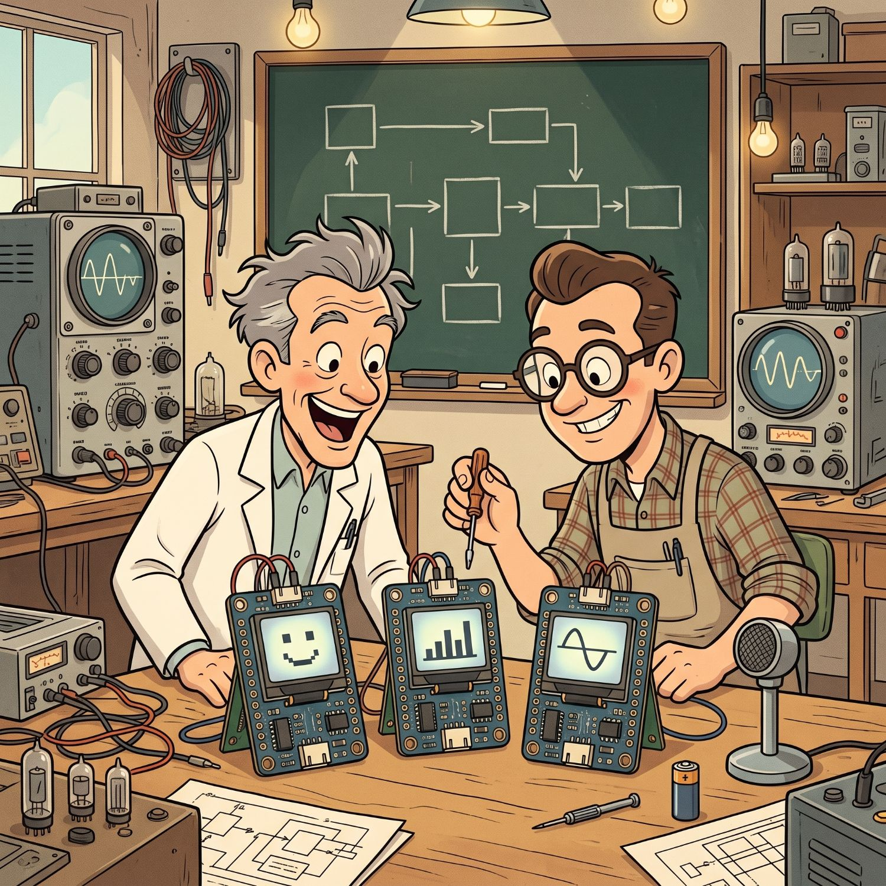
Overview
This tutorial walks through a set of short Arduino sketches that test every feature of the Seeed Studio XIAO IPS Display (ESP32-S3) boards: display, touch, IMU, microphone, buttons, battery sensing, microSD, and Wi-Fi. A final self-test sketch checks everything on one screen.
Two more parts use the same boards for TinyML (motion classification and keyword spotting, Part 2) and for running a very small language model on the device (Part 3). They follow in this chapter; see Parts 2 and 3 at a glance.
Source code, photos, and tools: https://github.com/Mjrovai/XIAO-IPS-Display-ESP32S3
Status of this draft
- Tested on one board: the 1.47” IPS Touch Display (XIAO ESP32-S3 Plus). Part 1 was run on September 30, 2026, and Parts 2 and 3 on October 5 and 6, 2026.
- The 1.14” and 0.96” versions are not tested yet. Their sections will be added when those boards are connected.
- Everything here was measured on one unit. Where a cause is a guess rather than a measurement, the text says so.
- Bring up every feature of the XIAO IPS Display: display, touch, IMU, microphone, buttons, battery sensing, microSD, and Wi-Fi
- Find and work around the slow graphics library, the shared SPI bus, and the other gotchas of the board
- Collect motion data on the microSD card and train and deploy a motion classifier with Edge Impulse
- Record your own keywords, deploy a keyword-spotting model, and check it on the board against a second implementation
- Run a 260,000-parameter language model on the board, with the weights in PSRAM
Parts 2 and 3 at a glance
These were run on the same board after Part 1. Each has its own page with the details, the code, and what we did not measure.
| Part | What it does | Headline result |
|---|---|---|
| Part 2, keyword spotting | Recognizes YES and NO on the microphone, with an Edge Impulse model | Offline, on the author’s own test clips: 85.3% correct. Live, with beep cues: YES 7 of 11, NO 9 of 9, other words 8 of 10 (few cues, wide intervals). Needs ESP-NN turned off on core 3.3.12 |
| Part 2, motion | Classifies four movements on the IMU, with an Edge Impulse model | 98.48% on the Studio’s test set (8 files); all four movements right in one live trial each; not a blind test |
| Part 3, a tiny language model | A 260,000-parameter model writes short stories on the board | 12.5 to 30 tokens per second; the first 64 tokens match an independent Python implementation for five prompts |
Part 1: Hardware bring-up
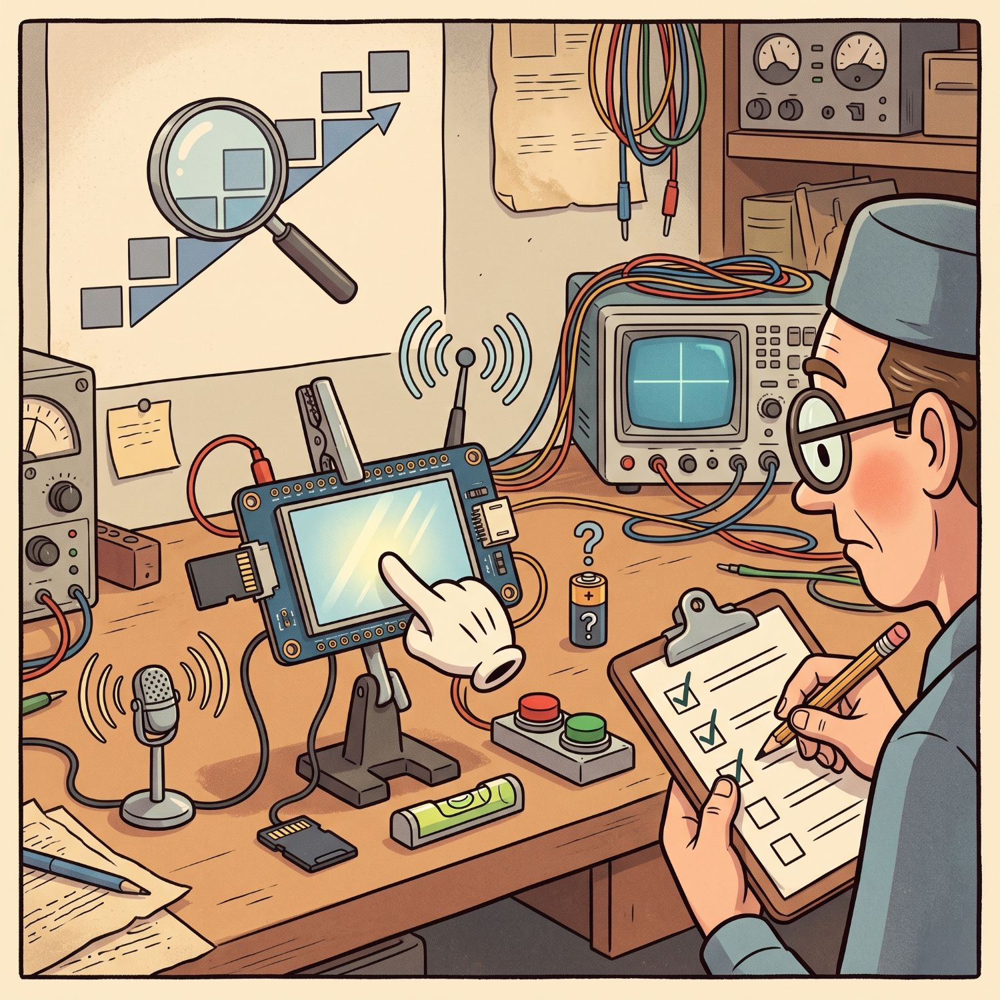
The family at a glance
| 1.47” IPS Touch | 1.14” IPS | 0.96” IPS | |
|---|---|---|---|
| Resolution | 172 x 320 | 135 x 240 | 80 x 160 |
| Display driver | JD9853A | ST7789 | ST7789 |
| Capacitive touch | Yes | No | No |
| microSD slot | Yes | No | No |
| Grove I2C | No | Yes | No |
| User buttons | 2 | 3 | 2 |
| Shared by all three | XIAO ESP32-S3 Plus (dual-core 240 MHz, 8 MB PSRAM, 16 MB flash, Wi-Fi and BLE), 6-axis IMU, PDM microphone, LiPo connector with voltage sensing |
These figures come from Seeed’s launch material. For authoritative details, see the Seeed wiki pages:
The Seeed product pages have a labeled diagram of each board, which we do not reproduce here:
What you need
- A XIAO IPS Display (ESP32-S3) board. This draft covers the 1.47” touch version.
- A USB-C cable that carries data.
- The Wi-Fi antenna, attached (see Gotcha 3).
- A microSD card formatted FAT or FAT32 (see Gotcha 4).
- Optional: a 3.7 V LiPo battery, for the battery test.
- A computer with
arduino-cli.
Setup
Versions used: arduino-cli with the esp32:esp32 core 3.3.12, and the Seeed_GFX2 library 1.0.0.
arduino-cli core install esp32:esp32@3.3.12Install Seeed_GFX2 1.0.0 into your Arduino libraries folder (for example ~/Documents/Arduino/libraries/Seeed_GFX2). The board string for every command in this tutorial is:
esp32:esp32:XIAO_ESP32S3_PlusPSRAM is disabled by default in this board definition. Nothing in Part 1 needs it, but the language-model part will. To enable it, append the option to the board string: esp32:esp32:XIAO_ESP32S3_Plus:PSRAM=opi.
Build the patched library (recommended)
Seeed_GFX2 1.0.0 is very slow on this board (see Gotcha 1). The folder tools/ contains a small patch. This script copies your installed library into libs/Seeed_GFX2_fast and applies the patch there, leaving the installed library untouched:
./tools/make_fast_lib.shThen compile any sketch with the patched copy:
arduino-cli compile --fqbn esp32:esp32:XIAO_ESP32S3_Plus \
--library libs/Seeed_GFX2_fast part1_bringup/03_imuAnd upload (the port name will differ on your machine):
arduino-cli upload -p /dev/cu.usbmodem101 \
--fqbn esp32:esp32:XIAO_ESP32S3_Plus part1_bringup/03_imuTo compile all sketches at once:
./tools/build_all.shIf an upload fails with “Failed to connect to ESP32-S3: No serial data received”, put the board in bootloader mode by hand: hold BOOT, tap RESET, release BOOT (the B and R marks beside the USB-C port, see The back of the board), then upload again. This happened once on our board, right after flashing a sketch that did not use the serial port. Later uploads worked without it.
Pin map (1.47” touch version)
| Function | Pins |
|---|---|
| Display (SPI) | CS = D2, DC = D3, SCK = D8, MOSI = D10, RST = GPIO 13, backlight = GPIO 12 |
| Touch (I2C, AXS5106L at 0x63) | SDA = D4, SCL = D5, INT = D7; reset shared with the display |
| IMU (I2C, same bus) | address 0x6A; interrupt = D14 |
| Microphone (PDM) | CLK = D0, DATA = D1 |
| microSD (SPI, shared bus) | CS = D6, SCK = D8, MISO = D9, MOSI = D10 |
| User buttons | USR1 = D19, USR2 = D15 (active low) |
| Battery sense | D16, through a 316 kΩ / 160 kΩ divider |
The display and the microSD card share SCK and MOSI. The display never reads, so the library creates its SPI without a MISO pin. Test 08 shows how to give the card a MISO without breaking the display.
The back of the board
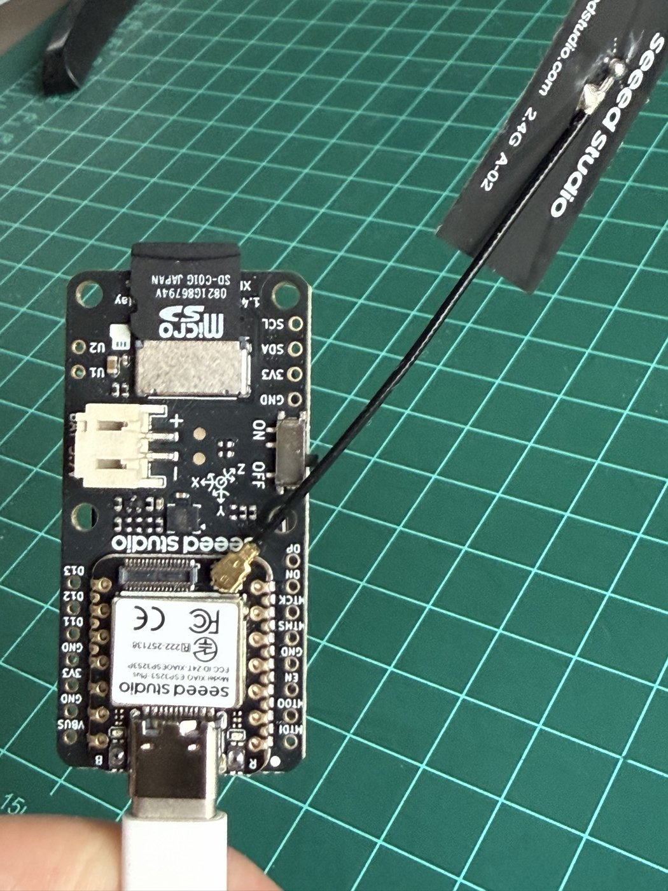
What the photo shows (the board is upside down, with the USB-C port at the bottom):
- Antenna. The flexible 2.4 GHz antenna plugs into the small gold connector beside the module, near the “seeed studio” logo. Without it, Wi-Fi barely works (see Gotcha 3).
- microSD slot. At the top, with a card inserted. Part of the card sticks out of the board.
- Battery connector. The two-pin connector on the left, marked + and -. It is empty in this photo.
- Power switch. The slide switch on the right, marked ON and OFF.
- IMU. The small square chip below the battery connector, with its X, Y, and Z axes printed on the board.
- Boot and reset. Marks labeled B and R sit on either side of the USB-C port. For the manual bootloader step in the Setup section, hold the boot button and tap the reset button.
- Pads. Labeled I2C pads (SCL, SDA, 3V3, GND) at the top right; and, along the edges, labeled pins for I2S, JTAG, and VBUS.
- U1 and U2. Marks for the user buttons, at the left of the microSD slot.
First light
The first sketch, xiao_esp32s3_147_hello, shows “Hello, XIAO” in large green text. It confirms the whole chain works: compile, upload, and display.
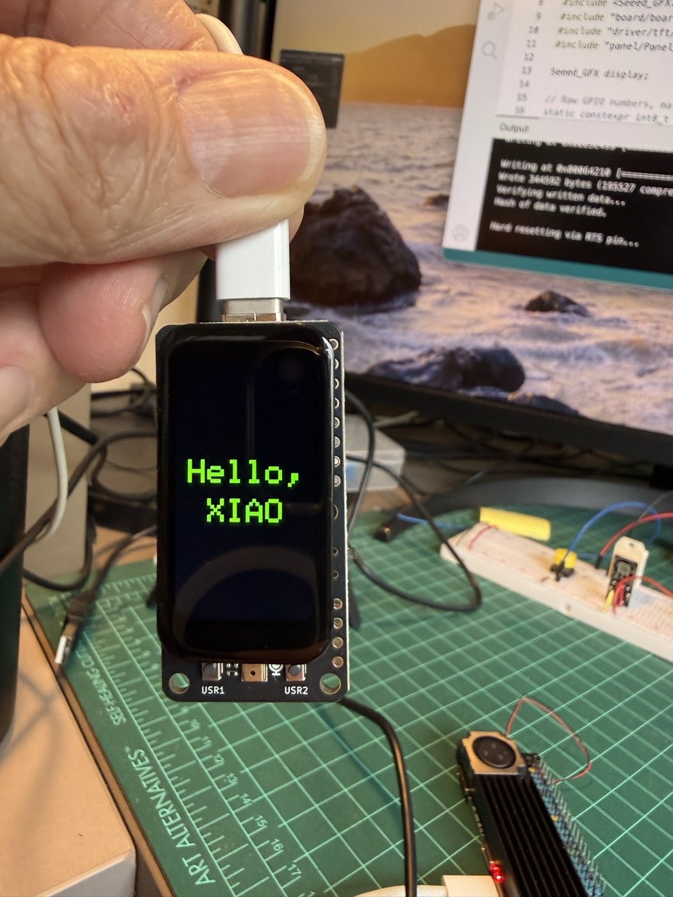
Sketch
How it works:
display.begin<Board, Config>()takes two types. The board type lists the pins the LCD uses; the config type names the panel (JD9853A, 172 x 320).- The reset (GPIO 13) and backlight (GPIO 12) pins are passed as template arguments.
- Text is centered by asking the library for
textWidth()andfontHeight(), so the layout needs no hard-coded pixel positions.
The complete sketch (54 lines) is in the repository: xiao_esp32s3_147_hello/xiao_esp32s3_147_hello.ino.
Tests
Each test is one folder in part1_bringup/. Every sketch draws to the screen and prints to the serial port at 115200 baud.
00 · I2C scan (00_i2c_scan)
Lists the devices on the I2C bus. Expected and measured: 0x63 (touch) and 0x6A (IMU). Two devices.
Sketch
How it works:
Wire.begin(D4, D5)puts the I2C bus on the board’s SDA and SCL pins.- A device that acknowledges its address makes
endTransmission()return 0. That is the whole trick. - The scan repeats every three seconds so a serial monitor opened late still sees the result.
The complete sketch (33 lines) is in the repository: part1_bringup/00_i2c_scan/00_i2c_scan.ino.
01 · Display (01_display)
Draws red, green, blue, and white bars, a white frame, and corner markers, then steps through the four rotations.
Measured: colors are in the right order, the frame is complete on all four edges, and the markers land in the right corners in every rotation. The screen is 172 x 320 (rotations 0 and 2) or 320 x 172 (rotations 1 and 3).
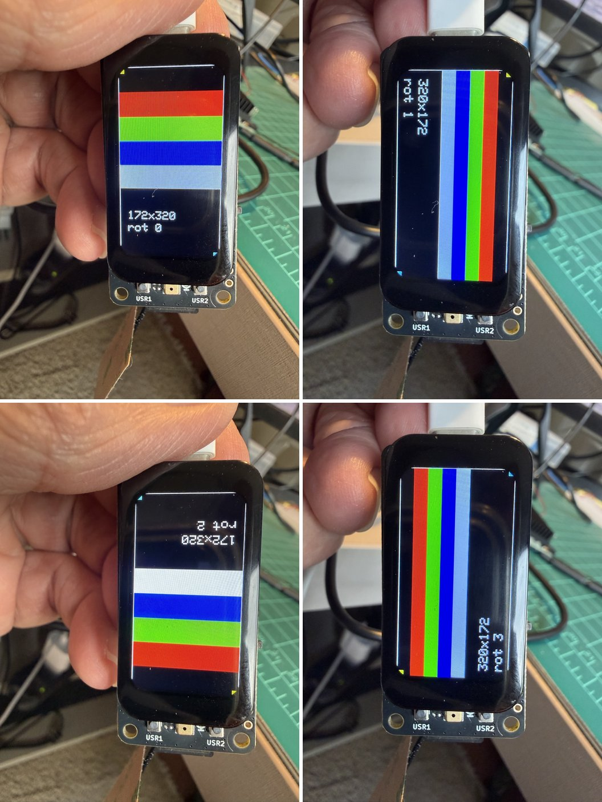
One lesson from this sketch: at text size 2 the font is 12 pixels wide, so only 14 characters fit across 172 pixels. A longer string wraps and drops its last character onto the left edge. Keep lines short or turn wrapping off.
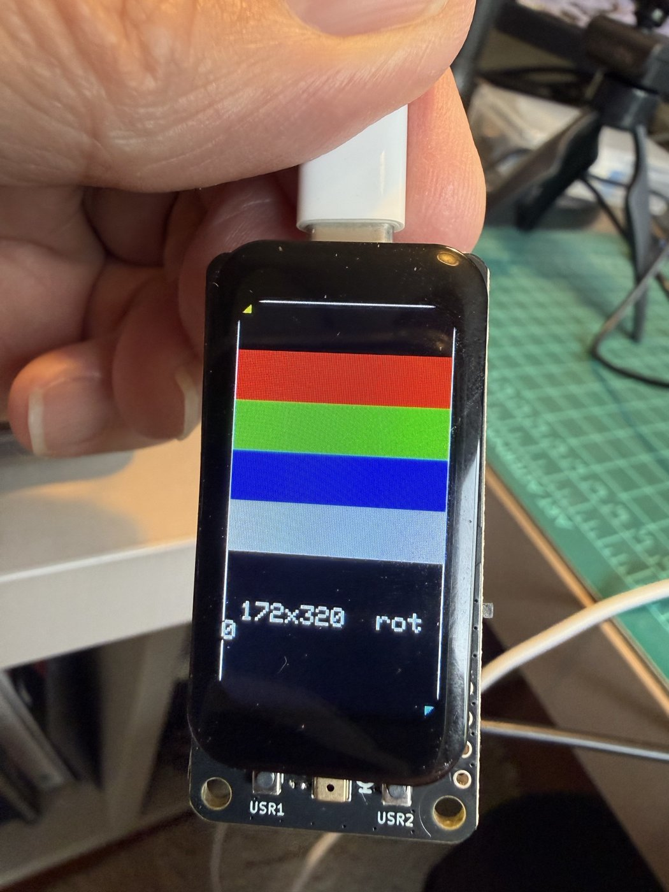
Sketch
How it works:
- Everything is sized as a fraction of
display.width()anddisplay.height(), so the same drawing works in all four rotations. - A one-pixel frame on the very edge shows immediately if any edge is clipped.
setTextWrap(false)stops long strings from wrapping onto the next line.
The complete sketch (71 lines) is in the repository: part1_bringup/01_display/01_display.ino.
01b · Gray ramp (01b_gray_ramp) and 01c · Gamma probe (01c_gamma_probe)
These two investigate the color cast described in Gotcha 5.
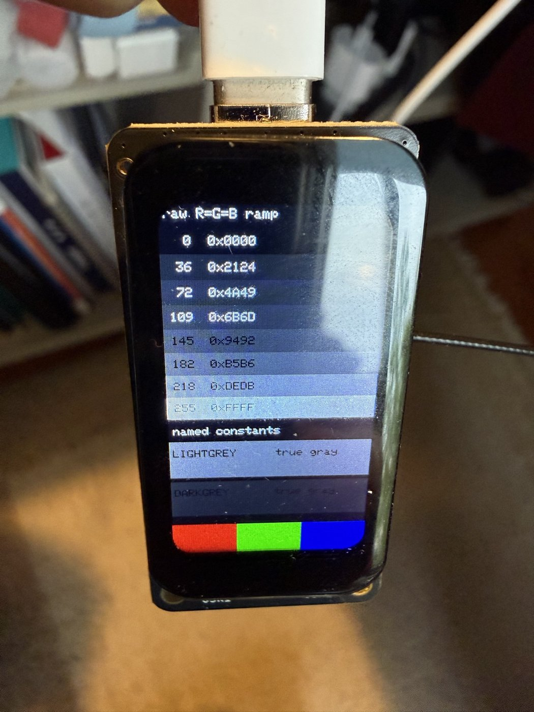
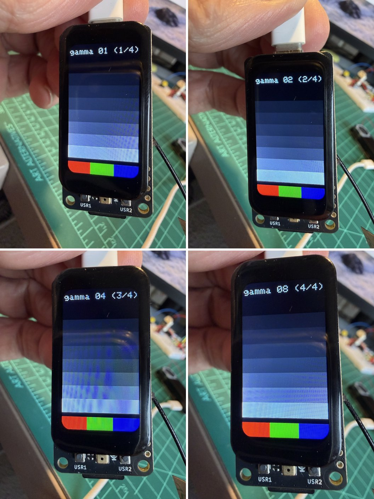
Sketches
How they work:
gray565()packs one 8-bit level into RGB565 (5 bits red, 6 green, 5 blue) with R = G = B, so any tint you see is not in the data.- The ramp draws into a sprite and sends it with one
pushSprite(). - The gamma probe reaches the raw display bus through
display.panel().driver().bus()to send the standardGAMSETcommand (0x26), which the library does not wrap. USR1 steps to the next curve, USR2 goes back.
The complete sketch (87 lines) is in the repository: part1_bringup/01b_gray_ramp/01b_gray_ramp.ino.
The complete sketch (81 lines) is in the repository: part1_bringup/01c_gamma_probe/01c_gamma_probe.ino.
02 · Touch (02_touch)
Four yellow targets sit in the corners, and a small CLEAR box sits at the top center. Touching draws red dots and prints coordinates.
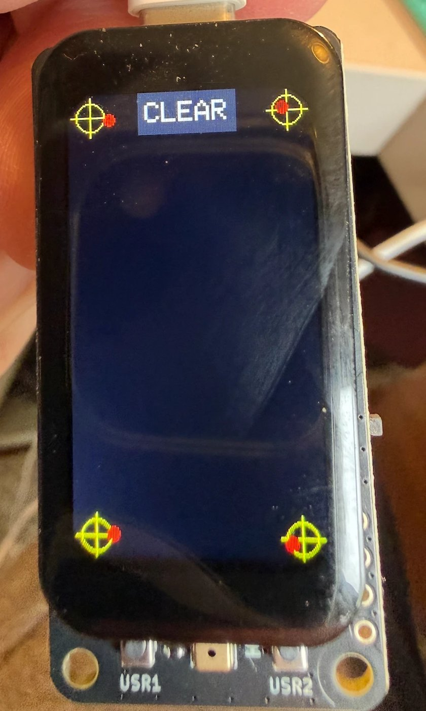
Measured: all four corners report coordinates inside the 172 x 320 area, for example (24, 12) at the top left and (151, 312) at the bottom right. There is no axis flip. The dots land within about 5 to 10 pixels of a fingertip aimed at each target, which is finger width, not controller error. With the patched library the tester reported the response as fast enough; we did not measure touch latency.
Design note: our first version put CLEAR across the whole top edge, which made the two top corners impossible to test. Keep controls out of the areas you need to probe.
Sketch
How it works:
- The touch object gets reset pin
-1: the display and the touch controller share one reset line, anddisplay.begin()has already pulsed it. Resetting again would blank the screen. attachTouch()links the touch controller to the display, sogetTouch()returns screen pixels.- The CLEAR box is small and central on purpose: the four corners must stay free to test.
The complete sketch (73 lines) is in the repository: part1_bringup/02_touch/02_touch.ino.
03 · IMU (03_imu)
Identifies the chip, then shows a bubble level and live acceleration and rotation values.
Measured: the chip is an LSM6DS3TR-C at 0x6A (the sketch also handles a QMI8658). At rest with the screen up: az = -0.994 g, ax and ay near zero with noise of 0.001 to 0.002 g, and a gyroscope bias of about 1 dps. The negative az means the screen side faces -Z. With the board held upright the bubble moves toward the raised side, like a real level.
The demo reaches about 22 frames per second with the patched library.
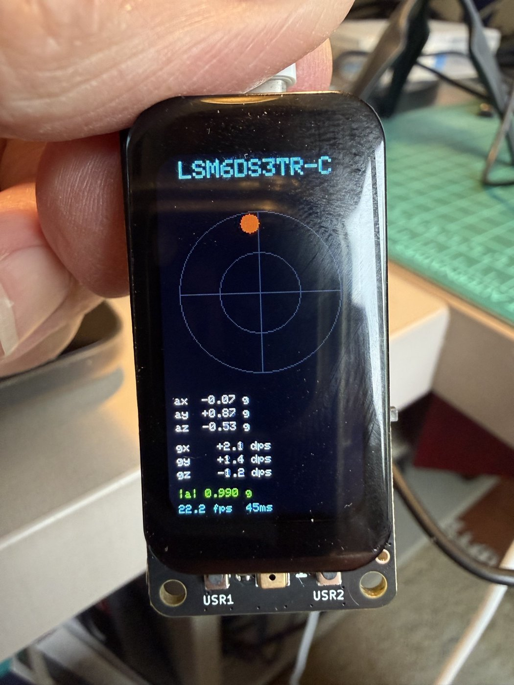
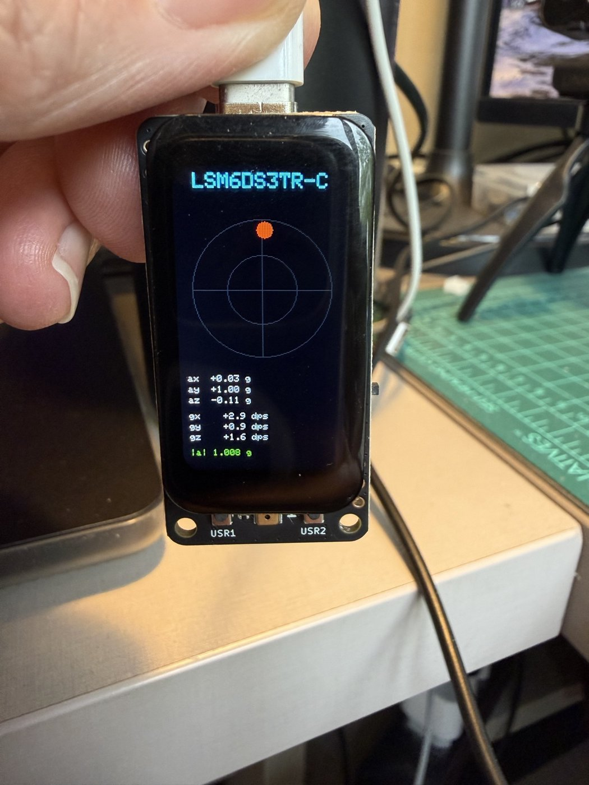
Sketch
How it works:
- The IMU is read over raw I2C, with no library.
WHO_AM_Idecides whether the chip is a QMI8658 or an LSM6 family part, and the scale factors follow from that. - The screen is drawn into a full-screen sprite and sent once per frame. Drawing straight to the panel took 740 ms per frame; the sprite takes 43 ms (see Gotcha 1).
- Serial prints one CSV line per frame (
ax,ay,az,gx,gy,gz), with timing lines that start with#.
The complete sketch (195 lines) is in the repository: part1_bringup/03_imu/03_imu.ino.
04 · Microphone (04_mic)
Reads 16 kHz mono audio through the ESP-IDF 5 PDM driver and shows the level in dBFS as a number, a bar with peak hold, and a scrolling history.
Measured (50-second run, three phases identified by level):
| Phase | RMS (dBFS) | Peak (dBFS) |
|---|---|---|
| Silence | about -73 to -69 (lowest -80) | -60 to -54 |
| Speech | up to -41 to -31 | -36 to -23 |
| Clap and taps | up to -15 to -13 | -3.4 to -0.6 |
That is roughly 60 dB between the noise floor and a clap. A loud clap close to the board almost reaches full scale, so expect clipping for very loud sounds.
The PDM filter needs about half a second to settle. The DC offset starts near +13000 and falls to a few hundred. Discard the first half second before measuring or recording.
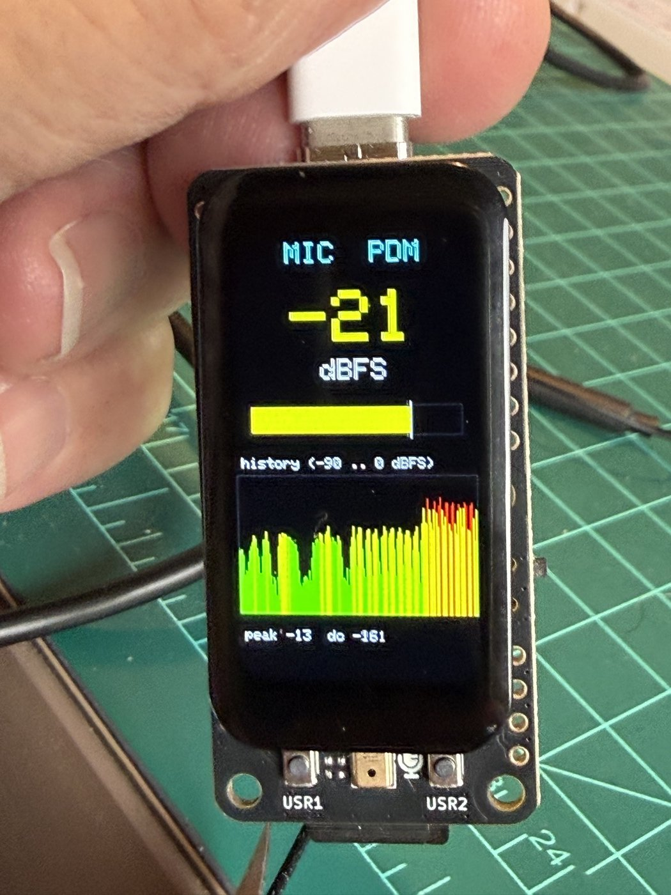
Sketch
How it works:
- The PDM microphone needs two wires: a clock the ESP32 drives (D0, GPIO 1) and a one-bit data stream back (D1, GPIO 2).
- The DMA buffers hold 128 ms of audio, so a slow screen update does not drop samples.
- The DC offset is subtracted before the level is computed, and the result is converted to dBFS (0 dBFS is full scale).
The complete sketch (146 lines) is in the repository: part1_bringup/04_mic/04_mic.ino.
06 · Battery (06_battery)
Reads the voltage on D16, applies the divider ratio (2.975), and shows volts, millivolts, an estimated percentage, and a history graph.
Result: not validated. With no battery connected and the power switch off, the board reads a steady 3.97 V, and it did not change when we toggled the switch. So that number is not a battery voltage. We do not know where it comes from; a likely explanation is that the sense divider sits on a node that the USB charging path holds up, but we did not check the schematic.
This test needs a LiPo connected. Until it has been run that way, treat the battery reading and the percentage as unverified. The percentage is also only a straight line from 3.30 V to 4.20 V, and a real LiPo curve is not straight. The ESP32-S3 version can read voltage only; it cannot detect charging status.
Sketch
How it works:
- The battery sits behind a 316 k / 160 k divider, so the pin sees 160/476 of the battery voltage. The sketch multiplies by 2.975 to undo that.
- It averages 16 ADC readings and uses
analogReadMilliVolts(), which applies the chip’s calibration. - The percentage is a straight line from 3.30 V to 4.20 V. A real LiPo curve is not straight, so treat it as a rough guide.
The complete sketch (100 lines) is in the repository: part1_bringup/06_battery/06_battery.ino.
07 · Wi-Fi scan (07_wifi_scan)
Scans for 2.4 GHz networks every six seconds and lists them with signal strength, channel, and security type. No credentials are needed.
Measured: a scan takes about 2.4 to 2.8 seconds. See Gotcha 3 for the antenna result. Network names from neighbors are not shown in this document.
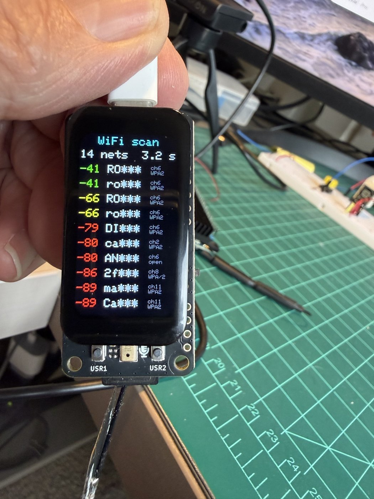
MASK_SSIDS 1. Green is stronger than -60 dBm, yellow down to -75 dBm, and red weaker.Sketch
How it works:
- Station mode with no connection: a scan needs no password.
WiFi.scanNetworks()returns the list sorted by signal strength, strongest first.MASK_SSIDSshows only the first two characters of each name, so photos and logs do not expose your neighbors.
The complete sketch (122 lines) is in the repository: part1_bringup/07_wifi_scan/07_wifi_scan.ino.
08 · microSD (08_sd)
Mounts the card, lists the root folder, writes 64 KB of a known pattern, reads it back, and compares every byte.
Measured (947 MB card): mount passes at 20 MHz; write 368 to 407 KB/s; read 1422 KB/s; zero mismatched bytes. The four colored bars drawn afterward were clean, which shows the card traffic did not corrupt the display.
The sketch only writes and deletes its own test file.
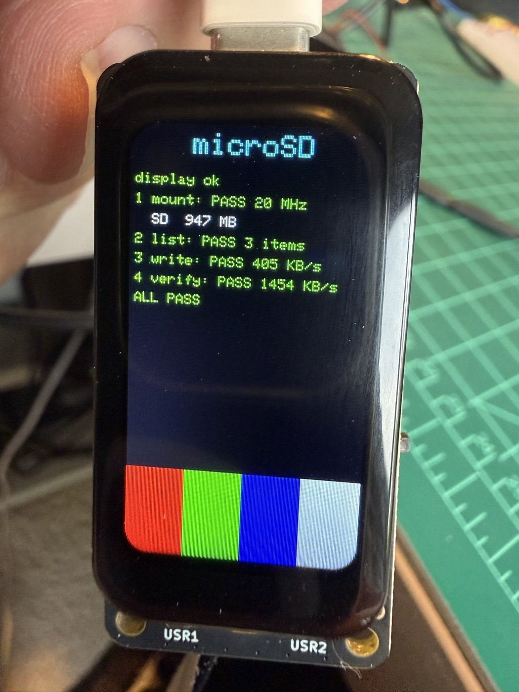
Sketch
How it works:
- The card shares the SPI bus with the display, so the sketch reuses the display’s own
SPIClassand attaches the MISO pin to it. A second SPI object would stop the display’s bus (Gotcha 2). - The mount tries 20 MHz first and falls back to slower clocks.
- The test writes a known pattern and compares every byte on read-back, so any corruption shows as a mismatch.
- The summary repeats in
loop()so a serial monitor opened late still sees it.
The complete sketch (154 lines) is in the repository: part1_bringup/08_sd/08_sd.ino.
09 · Self-test (09_selftest)
Runs I2C, IMU, microphone, microSD, Wi-Fi, and battery checks automatically, then waits for you to press USR1, press USR2, and touch the screen.
Measured: the six automatic checks gave PASS (battery shows N/A on purpose, because a reading alone cannot prove a battery is present). After pressing both buttons and touching the screen, the three manual lines also passed: the photo below shows 8 PASS, 0 FAIL, and 0 waiting, with the touch line reporting the last touch at x=159, y=312.
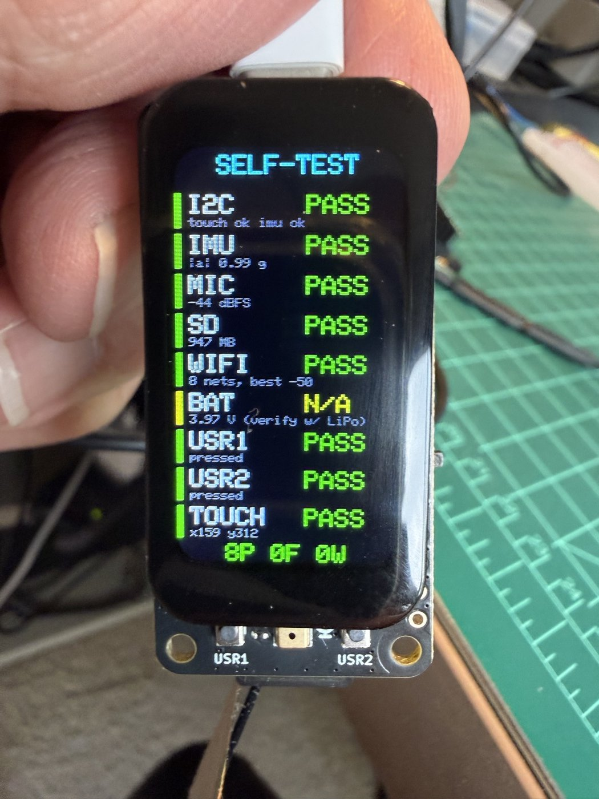
Sketch
How it works:
- Every check is one function that fills a
Checkentry with PASS, FAIL, or N/A and a short note; the screen is redrawn after each one. - The microphone check discards the first blocks while the PDM filter settles, then measures one block.
- The battery line is N/A on purpose: a reading alone cannot prove a battery is connected (see test 06).
- The three manual checks live in
loop()and turn PASS the first time their event is seen.
The complete sketch (251 lines) is in the repository: part1_bringup/09_selftest/09_selftest.ino.
Gotchas
1. Seeed_GFX2 1.0.0 is slow on the ESP32-S3
Symptom: the IMU demo ran at about one frame per second, and touch drawing felt sluggish.
Cause, from reading the library source: the ESP32 SPI path writes pixels one at a time and never uses a bulk transfer or DMA. Seeed_Sprite also fills and pushes pixel by pixel or row by row.
Measured (1.47” board, before and after the patch):
| Operation | Original | Patched |
|---|---|---|
fillScreen on the panel |
161 ms | 33 ms |
fillRect 50 x 50 |
7.5 ms | 1.6 ms |
fillScreen in a sprite |
41 ms | 1.1 ms |
pushSprite, full screen |
147 ms | 32 ms |
| IMU demo, time per frame | 740 ms | 43 ms |
Drawing text, circles, and single pixels straight to the panel stays slow (12 characters took 84 ms). The rule that works: draw into a Seeed_Sprite, then push it once. The patch (tools/seeed_gfx2_speedup.patch, three files) uses the ESP32 SPIClass::writePixels and writePattern calls, adds a fast row fill to the sprite, and sets the address window once in pushImage.
The patch is a workaround. It would be better for the fix to go upstream to Seeed.
2. Do not create a second SPI object for the microSD card
Symptom: SD.begin() never returns when the display is already running.
Cause: creating a second SPIClass(HSPI), as Seeed’s own 0519_MicSD_147_ESP32 example does, makes arduino-esp32 3.3.12 stop the SPI bus the display is using. The log shows spiDetachBus(): Stopping SPI bus. The unmodified Seeed example hangs the same way on our board.
Fix that worked: reuse the display’s own SPI object and attach the MISO pin to it:
SPIClass *spi = static_cast<Bus_SPI &>(display.panel().driver().bus()).spiInstance();
spiAttachMISO(spi->bus(), D9);
SD.begin(D6, *spi, 20000000);3. Without the antenna, Wi-Fi barely works
With no antenna attached, a scan found 2 networks at about -80 dBm. After attaching the antenna, the same room showed 7 to 8 networks, and the strongest moved to -39 dBm, about 40 dB better. If your scan shows few networks that are all weaker than -80 dBm, check the antenna first.
4. The microSD card must have a FAT volume
A 32 GB card that probably held a Raspberry Pi OS image answered the SPI reset commands correctly but failed to mount: f_mount failed: (13) There is no valid FAT volume. A 1 GB FAT card worked at once. If mounting fails, a direct test helps: send CMD0 and CMD8 by hand (see part1_bringup/extras/sd_spi_probe). A card that replies but will not mount has a filesystem problem, not a wiring problem.
5. Grays have a blue cast
In the gray ramp, R = G = B values from black to white look bluish, most clearly in the middle steps. The named constants (TFT_DARKGREY is 0x7BEF, which is neutral) look the same as a true gray next to them, so the constants are not the cause. The red, green, and blue primaries look correct.
What we tried: the standard GAMSET command (0x26) with all four gamma curves. The command was accepted, and the screen did not visibly change. To check that by numbers, we photographed the ramp under the same conditions with each curve selected and measured the brightness of each step relative to the white step. At the mid-tone step (level 109) it was 0.33, 0.28, 0.36, and 0.33 for curves 01, 02, 04, and 08; at level 182 it was 0.55, 0.51, 0.56, and 0.52. The differences follow no order and are within what the camera’s automatic exposure, the viewing angle, and glare produce between photos. The mean blue to red ratio over levels 72 to 255 was 2.4 to 2.6 for all four curves. (These blue to red values are not comparable with the table below: the method and the exposure differ.)
What the JD9853 datasheet (Preliminary V0.00) suggests: the gamma registers feed the red, green, and blue converters together, so gamma adjustment cannot correct a difference between channels. Our best guess is that the cast is optical (a cool-white backlight), which is common on IPS panels. We have not confirmed that cause.
Is it the panel or the camera? To check, we photographed the same kind of ramp on a Mac screen (tools/gray_ramp_reference.png, the same eight levels, True Tone and Night Shift off) with the same phone, in the same room. We sampled the middle of each step from levels 72 to 255 and averaged the blue to red ratio of the camera’s output (1.00 would be neutral):
| Photo | Blue / red |
|---|---|
| Mac reference ramp | 0.96 |
| Board ramp, photo 1 | 1.86 |
| Board ramp, photo 2, other time and scene | 1.4 to 1.65, depending on where we sampled (reflections in the glass) |
| Same photo, Mac ramp | 0.95 |
| Same photo, board ramp (four wide bands) | 1.5 to 2.2 |
So the camera rendered the Mac’s neutral ramp as neutral and the board’s ramp as clearly blue, in separate photos and in one photo that has both screens in the frame (the last two rows). This points at the panel. It is still not proof: the board’s screen is small in the same-frame photo, we picked the sample points by hand, and the phone’s processing is not linear. That photo is not published, because the Mac screen behind it shows unrelated text. A colorimeter would also give a number for the size of the shift. Repeat the comparison with the reference image and see.
6. Serial output and startup
- Call
Serial.setTxTimeoutMs(0)right afterSerial.begin(). Without it, a write to the USB serial port can block when nothing is reading it. We added this in the same change that made the sketches feel responsive, so we have not proved it was the cause of the lag. - With that setting, messages printed while no program is listening are lost. Sketches that run once in
setup()should print a summary again inloop(), as08_sddoes.
7. A small FAT16 card fills up after about 165 files
A card under 2 GB is usually FAT16, whose root folder holds a fixed number of entries (typically 512), and a long file name uses several of them. A card that is 99% free can still refuse to create a file once the root holds about 165 long-named files. The error looks like “no space left on device”, and a sketch sees a failed write. Keep files in subfolders. Part 2 hit this while recording audio clips; see the details.
Results for the 1.47” touch version
| Test | Result |
|---|---|
| 00 I2C scan | Pass |
| 01 Display | Pass (blue cast in grays noted) |
| 02 Touch | Pass |
| 03 IMU | Pass (LSM6DS3TR-C) |
| 04 Microphone | Pass |
| 05 Buttons | Pass (bounce measured: at most 114 us in 24 presses and 24 releases) |
| 06 Battery | Not validated: needs a connected LiPo |
| 07 Wi-Fi scan | Pass, with the antenna attached |
| 08 microSD | Pass, with a FAT card and the shared-SPI fix |
| 09 Self-test | Pass (battery N/A) |
Part 2: TinyML with the IMU and the microphone (Edge Impulse)
This part follows two chapters of this book, Motion Classification and Anomaly Detection and Keyword Spotting (KWS). Those chapters use the XIAOML Kit; here the same labs run on the XIAO IPS Display (ESP32-S3) boards. The vision chapters do not apply, because these boards have no camera.
Status: working, with open questions. Keyword spotting: a model was trained in the Edge Impulse Studio and runs on the board, it classifies recorded clips correctly there, and a first live test with a voice shows it detecting YES and NO. A cued test (beeps tell the speaker which word to say) gave, with few cues: YES 7 of 11, NO 9 of 9, other words 8 of 10 correct. Motion: 48 samples were recorded with the logger, a model was trained in the Studio (98.48% on its test set), and it runs on the board; a first live test with the board in hand classified each of the four movements correctly. A blind test is still to do.
The test numbers follow the order in which we built them: test 01 (the logger) and test 06 (motion on the board) belong to motion, and tests 02 to 05 to keyword spotting. Part 3 continues with test 07.
What is different from the book
| The book (XIAOML Kit) | These boards | |
|---|---|---|
| IMU | LSM6DS3TR-C, I2C 0x6A | Same chip, same address |
| IMU library | Seeed Arduino LSM6DS3 | Same library |
| Data collection | Edge Impulse CLI data forwarder over USB | CSV files on the microSD card, recorded with no computer attached (the book lists this as an alternative) |
| Microphone | PDM, GPIO 41 (data) and 42 (clock) on the Sense board | PDM, D0 (clock) and D1 (data), see Part 1, test 04 |
| Result display | An OLED | The 1.47” touch display |
| ESP32 Arduino core | 2.0.17 (its I2S.h is used for the microphone) |
3.3.12 (the IDF 5 PDM driver is used instead) |
One point where the book and the library disagree. The book says the IMU runs at +/-2 g and +/-250 dps by default. In the installed Seeed Arduino LSM6DS3 library (2.0.7) the defaults are +/-16 g and +/-2000 dps. The book’s code still works, because the library scales the readings to g correctly, but the resolution is eight times coarser, and the book’s inference code clips at 2 g anyway. The sketches here set +/-2 g and +/-245 dps (the library offers 245, not 250) explicitly, in both the data logger (test 01) and the inference sketch (test 06), so training and inference see the same scale.
Motion classification
The book’s four classes simulate how a container moves during transport:
- maritime: movement on all three axes, wave-like.
- terrestrial: mostly horizontal movement, with small vibrations.
- lift: mostly vertical movement, like a forklift: up, pause, down.
- idle: the board resting on a stable surface.
Test 01: IMU data logger
Records 10-second samples at exactly 50 Hz and saves each one on the card as a CSV file named after its class, such as idle.003.csv, in a folder of the same name (/idle/idle.003.csv). No computer is needed while recording, so the board can ride in a bag, a car, or a cart.
How to use it
- Touch a class on the screen, or press USR2 to step through them.
- Press USR1 or touch START. A 3-second countdown lets you set the board.
- Move the board the way that class would move, for 10 seconds. The file saves itself. Press USR1 during a recording to abort it; the partial file is deleted.
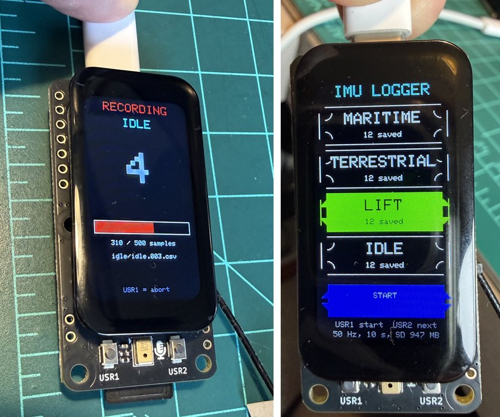
idle/idle.003.csv, 310 of 500 samples done. Right: the class screen after the dataset was recorded, with 12 samples saved in each of the four classes. The line at the bottom shows the rate, the sample length, and the free space on the card.The CSV format: timestamp,accX,accY,accZ,gyrX,gyrY,gyrZ, with the time in milliseconds (0, 20, 40, and so on), acceleration in m/s2, and rotation in degrees per second. The book’s model uses the three acceleration columns; the gyroscope columns are there for you to try.
Measured. One test recording with the board at rest gave 500 rows, no lost samples, timestamps from 0 to 9980 ms in steps of exactly 20 ms, and a time between samples that varied from 19.75 to 20.22 ms (about 1% around 20 ms). The mean magnitude of the acceleration was 9.72 m/s2 (0.99 g), and the gyroscope showed a bias of 1 to 2 degrees per second. The 48 files of the dataset below were recorded with it, in motion, and passed the same checks.
How it works
- A separate task owns the clock. The sampler runs as its own task and uses
vTaskDelayUntil, which keeps a fixed period without drift. The main loop can then draw on the screen and write to the card without delaying a sample. - A queue carries the samples from the sampler to the main loop, which formats them and writes to the card in blocks, with a flush every two seconds so little is lost if the card is pulled.
- The I2C bus is shared. The touch controller and the IMU use the same bus, so the touch controller is read only while idle, and the sampler is the only code that touches the bus while recording.
- The card shares SPI with the display, so it uses the display’s own SPI object, as in Part 1, test 08.
- One folder per class, because a small FAT16 card cannot hold hundreds of files in its root folder (see A limit we hit).
- Debug commands on the serial port:
cnext class,rrecord,llist files,pprint the last file,xdelete the last file.
The complete sketch (430 lines) is in the repository: part2_tinyml/01_imu_logger/01_imu_logger.ino.
The motion dataset
We recorded 12 samples of 10 seconds for each class (48 files, 500 rows each) with test 01, and checked them with tools/motion_dataset_check.py before uploading. Every file has 500 rows and a step of exactly 20.00 ms. The acceleration is near 1 g in every class (mean 9.75 to 10.01 m/s2), and the classes differ in how much it varies:
| Class | Std of the acceleration magnitude (m/s2) | What moves |
|---|---|---|
| idle | 0.03 | nothing |
| terrestrial | 0.72 | small vibration, mostly one horizontal axis |
| lift | 2.60 | mostly the vertical axis (z) |
| maritime | 2.91 | all three axes, gyroscope 70 to 135 deg/s |
lift and maritime have a similar total variation, but they differ by axis, which is what the Spectral Analysis block sees. Three idle files (3, 5, and 11) include a bump, probably the hand settling after START or reaching for the board; we kept them, because a real idle board is also touched now and then.
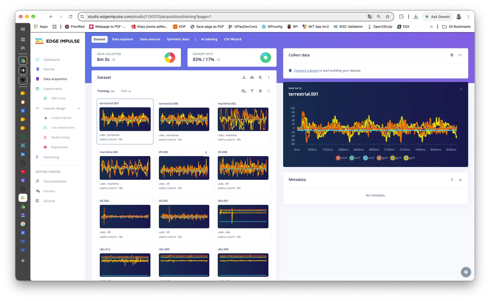
The motion model
The model was trained in the Edge Impulse Studio by the author, in a project named “XIAO IPS Display - Motion”. The library it generated is not in this repository. What differs from the book:
- Six axes, not three. The book uses the three acceleration axes; here accX, accY, accZ, gyrX, gyrY, and gyrZ all go in, because the logger records them.
- FFT length 16, not 32, so each window gives 78 features (13 per axis), not 63.
- Learning rate 0.0005 and 30 training cycles, with the book’s two dense layers (20 and 10 neurons). An anomaly block (K-means, 32 clusters) is added, as in the book.
The window is 2,000 ms with a 200 ms stride, at 50 Hz: 100 samples of 6 axes (600 values). The 40 training files make 1,640 windows (6 minutes 40 seconds); 8 files (17%) are kept for testing.
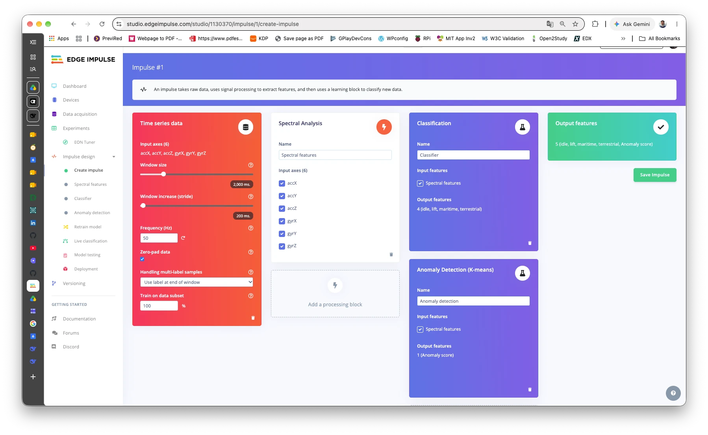
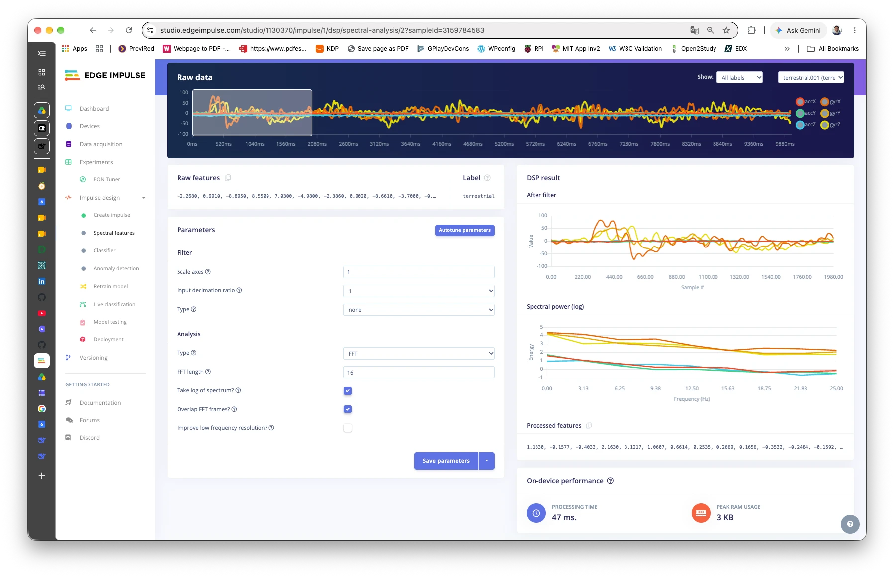
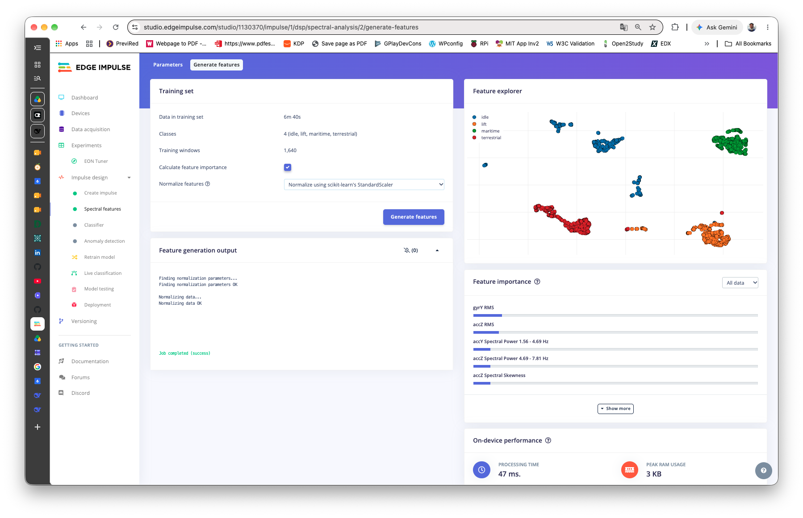
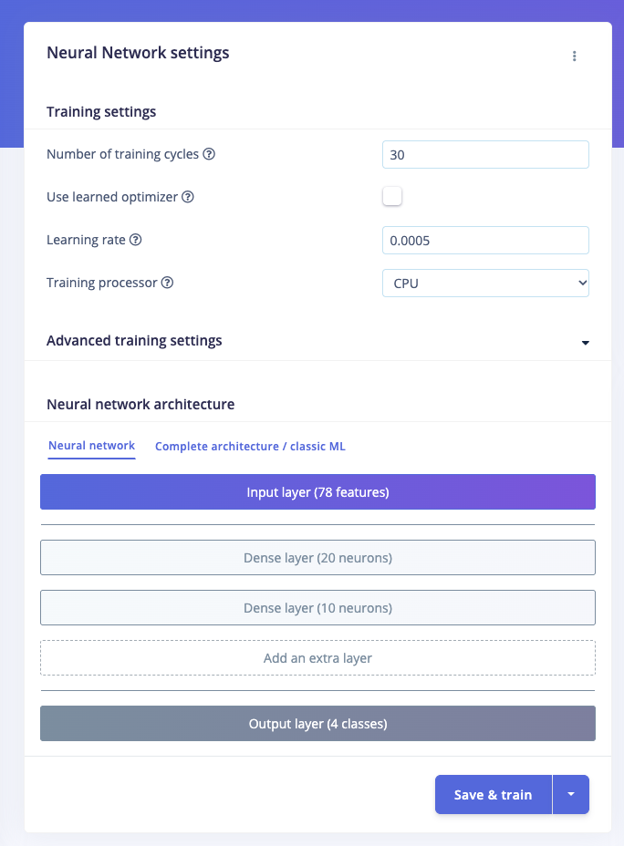
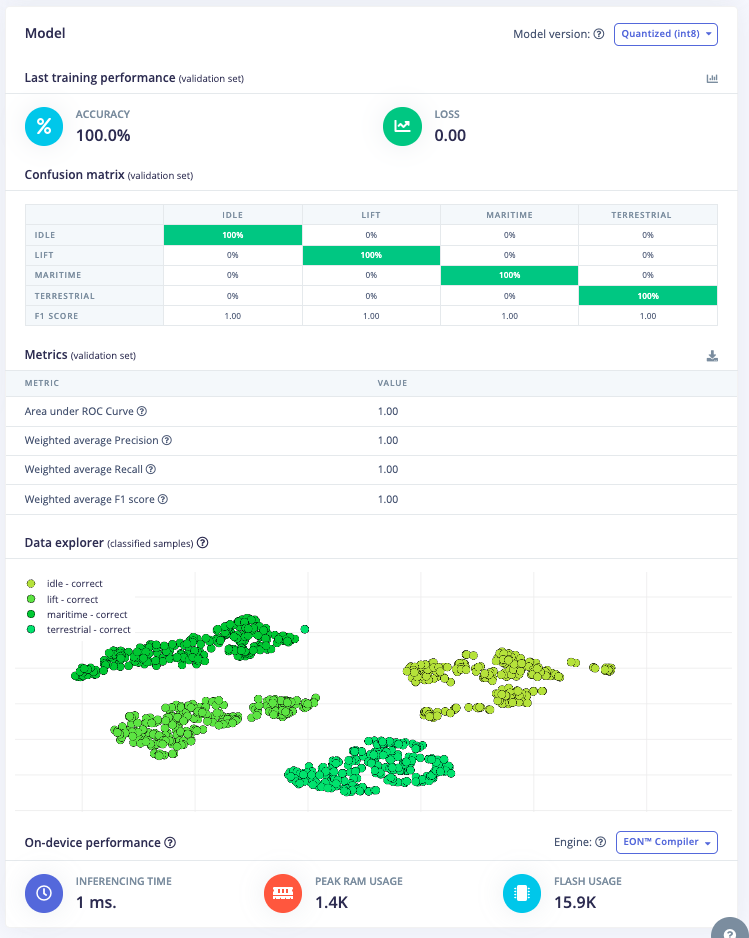
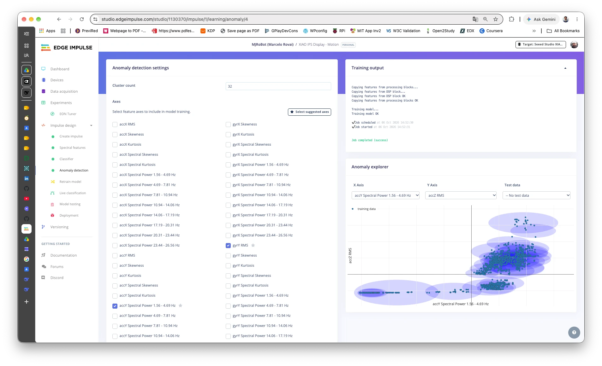
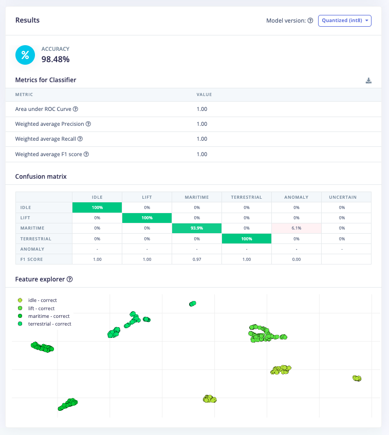
maritime is flagged as an anomalyWhat the Studio reports. The validation accuracy is 100%, with a loss of 0.00. Do not read much into it: windows that overlap by 90% can land in both the training and the validation set, so the network is partly graded on data it has seen. The test set is independent (whole files the model never saw) and gives 98.48%: idle, lift, and terrestrial at 100%, and maritime at 93.9%, with the other 6.1% flagged as an anomaly. It is only 8 files, so one more or one less changes the figure by a lot. The five features the Studio ranks highest are gyrY RMS, accZ RMS, accY spectral power in the 1.56 to 4.69 Hz band, accZ spectral power in the 4.69 to 7.81 Hz band, and accZ spectral skewness. The classifier asks for only 3,020 bytes of working memory.
Test 06: motion classification on the board
Runs the model on the IMU, continuously. The sampler from test 01 fills a ring buffer at 50 Hz and, every 500 ms, the last 2 seconds go to the classifier. The screen shows the winning class, a bar for each class, the anomaly score, and the processing times.
The sketch sets the same ranges as the logger (+/-2 g, 245 dps), and feeds the six axes in the training order and units (m/s2 and deg/s). If the units or the order were different, the model would answer wrongly without any error.
Checked against the Studio data. The sketch has a replay mode: tools/motion_replay.py sends windows from the CSV files over USB and the board answers with its scores. All 432 windows (every file, one window per second) were classified correctly, 108 per class. This is not a test of the model, since these are the same files used to train it; it shows that the board computes what the Studio computed, with the right order and units. We ran it twice, with ESP-NN off and on, and the scores were identical (the largest difference was 0.0): the fault we found in the keyword model (see the ESP-NN section) does not appear here, so this sketch needs no build_opt.h. This holds for this model, with core 3.3.12.
Measured. The sketch uses 603 KB of flash (28%) and 33 KB of RAM (10%), with PSRAM disabled. The signal processing takes 5 to 6 ms and the network less than 1 ms (the counter has a resolution of 1 ms), against the Studio’s estimates of 47 ms and 1 ms.
Live. The author held the board and moved it as each class would be moved. It answered correctly in all four cases photographed:
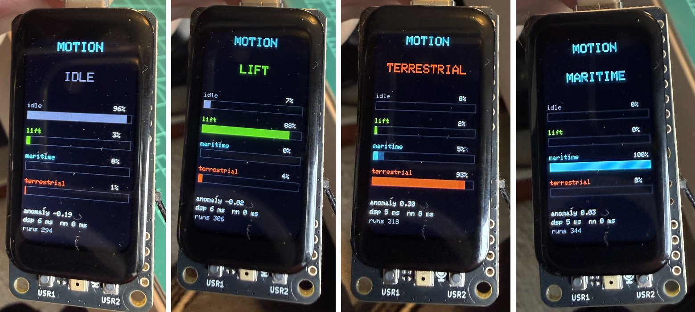
From left to right: the board at rest (IDLE, 96%), then moved as the classes lift (LIFT, 88%), terrestrial (TERRESTRIAL, 93%), and maritime (MARITIME, 100%) would move it. The anomaly score read -0.19, -0.02, 0.30, and 0.03. The score is higher the less a window looks like the training data; 0.30 for the terrestrial movement is the largest of the four, and that class is the most variable in our data.
This is one photographed attempt per class, by hand, not a blind test: it shows that the model works live, not how often it is right. Compare with how we measured the keyword model, with beeps as cues and known answers.
The complete sketch (219 lines) is in the repository: part2_tinyml/06_motion_inference/06_motion_inference.ino.
Next steps for motion
- A blind test with ground truth, as for the keywords: cue the movement, record what the board said, and compare. A new recording with a different person or a different container would also say how much the model depends on how we moved the board.
- More data for
maritimeandidle, the classes where the Studio’s test and our files show the most spread. More samples would also make the test set bigger than 8. - Try the accelerometer only, as in the book, and compare with the six axes.
- Use the anomaly score: choose a threshold on a new recording and show an alert on the screen.
Keyword spotting
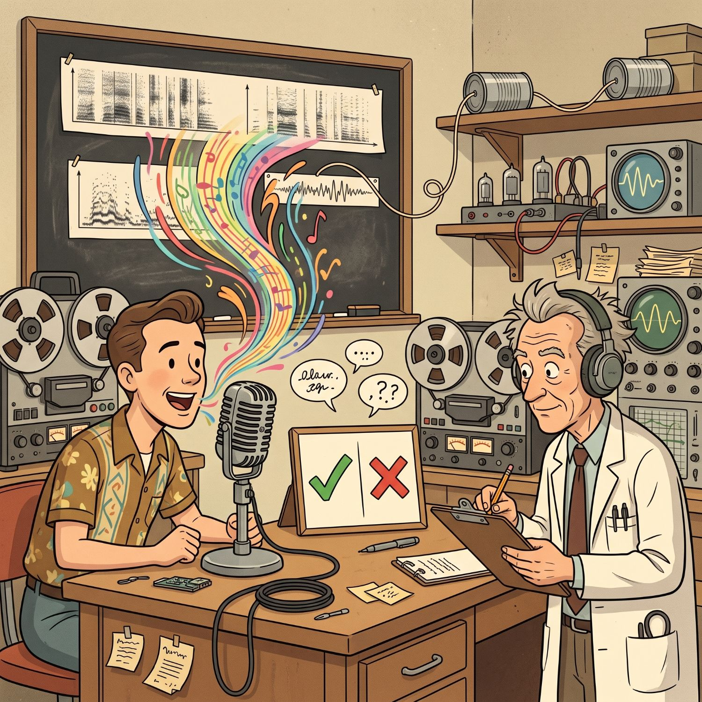
Status: the model is trained and runs on the board. Replaying recorded clips on the device gives the same answers as the same model on a computer (tests 04 and 05). A first live test with a voice, on the board’s own microphone, works (see the live test), and a test with beep cues measured it (see the cued test). Finding why the first attempt failed took a detour through a bug in the optimized neural-network kernels (see A problem we found).
The book uses four classes, yes, no, noise, and unknown, from the Edge Impulse keyword-spotting pre-built dataset (derived from Pete Warden’s Speech Commands), 1-second clips at 16 kHz and 16 bits. Its model uses MFCC features and a small 1D convolutional network.
The dataset. The two copies of this dataset in the author’s Dropbox (XIAOML-Kit/keywords and 2021/.../keywords2) had the right folders and file names, but every one of the 6,036 files was empty (0 bytes), so we downloaded the original archive again from https://cdn.edgeimpulse.com/datasets/keywords2.zip. It is 145,511,868 bytes, with SHA-256 ab2375ceb0e5add85e47419bd2edf2b8d4378fc5513079044eef73850a39a918. We keep it outside the repository and outside Dropbox, in ~/datasets/edge-impulse/.
tools/kws_dataset_check.py checks it. Result: the zip is intact, and there are 6,036 files, none empty or unreadable: yes 1,500, no 1,500, unknown 1,500, and noise 1,536. Every file is 16 kHz, 16-bit, mono, and exactly 1.00 s, which is the format the book needs. The level of a random sample of 300 files per class, as RMS in dBFS over each 1-second clip:
| Class | 10th percentile | Median | 90th percentile | Clipped files (of 300) |
|---|---|---|---|---|
| yes | -35.9 | -25.2 | -18.6 | 16 |
| no | -33.3 | -24.4 | -18.0 | 9 |
| unknown | -35.1 | -24.3 | -17.1 | 14 |
| noise | -37.3 | -27.4 | -15.4 | 9 |
A question that was open, and is now answered. These clips are fairly loud, and the speech this board records is quieter (see test 03). Whether that hurts the model turned out not to matter: with this model, the answers do not change when the signal is made 12 dB louder or 36 dB quieter (test 05).
The files are derived from Pete Warden’s Speech Commands dataset (arXiv:1804.03209). They are not in this repository; check the dataset’s license before you share them.
Test 02: audio front end (no model yet)
Captures the microphone continuously at 16 kHz and cuts it into 250 ms slices, the way Edge Impulse’s continuous inference works: a 1-second window made of four slices, sliding forward one slice at a time. There is no classifier. This test proves the part that differs from the book, the ESP32 core 3.x PDM driver in place of the old I2S.h, before a trained model exists.
Measured. In a run of 400 slices (about 100 seconds) there were no overruns and no read errors. Single intervals between slices alternate between 240 ms and 256 ms, because the driver hands over audio in 16 ms blocks, but the average over 400 slices was 250.03 ms, so no audio is lost. The main loop picked up each slice within 1.6 ms of its completion while it also redrew the screen. We did not test this sketch with a model; test 04 does, and it takes about 32 ms per slice. The book says the KWS sketch needs PSRAM enabled; this model runs with PSRAM disabled (see the model).
How it works
- Two buffers. A capture task fills one 250 ms slice while the main loop reads the other. If a slice finishes before the last one was read, an overrun is counted. That counter stayed at zero.
- The task runs on core 0, so drawing on core 1 cannot delay the audio.
- The first half second is discarded, because the microphone filter is still settling (see Part 1, test 04).
- The model hook is
process(): it receives each finished slice as 4000 samples. Edge Impulse’srun_classifier_continuous()goes there.
The complete sketch (201 lines) is in the repository: part2_tinyml/02_kws_audio_frontend/02_kws_audio_frontend.ino.
Test 03: record your own keywords
The dataset comes from many voices and many microphones. This board has one specific microphone, and you have one specific pronunciation of “yes” and “no”. So it is worth recording your own clips, for two reasons: to add them to the training data, and, more important, to keep some of them as a test set, so the model is tested on what this board actually hears. The book also recommends collecting words spoken by yourself.
The recorder listens to the microphone and, each time it hears a word, saves a 1-second clip with the word inside (300 ms before it starts, 700 ms after), as a 16 kHz, 16-bit, mono WAV named like the dataset: yes.own.001.wav, no.own.014.wav, and so on, in a folder per class (/yes, /no, /unknown, /noise). You say a word, wait for “SAVED”, and say it again. No computer is needed.
How to use it
- Touch a class: YES, NO, UNKNOWN (any other word), or NOISE. For NOISE the board does not wait for a word; it saves a clip every 1.5 seconds, so you can let it record the background of your room.
- Press USR1 to start listening, and again to stop.
- Press USR2 to delete the last clip if it is bad (cut off, or a cough). Press it again to delete the one before.
- If words are missed, or noise triggers it, change the margin with the
-and+buttons. The screen shows the background level (blue line) and the trigger level (orange line).
The thumbnail shows the last clip’s waveform, so you can check that the word is centered, and the screen shows the clip’s level in dBFS. The audio is saved as captured, with no gain, so that level is the true level of this microphone. Compare it with the dataset’s clips, whose median is near -25 dBFS RMS.
A suggested plan. The numbers are our judgment, not a tested recipe: about 60 clips of YES, 60 of NO, 40 of other words for UNKNOWN, and a minute or two of NOISE in the room where you will use the board. Keep about a third of the YES and NO clips for the test set, and put the rest in training. Your clips will be a small share of the training data next to the dataset’s 1,500 per class, so do not expect them to change the model much; their main value is the test.
Measured. The save path was tested with the NOISE class: six clips were saved, each 32,044 bytes (a 44-byte header plus 32,000 bytes of audio) and each read back from the card and compared with what was captured. Word detection was tried with a voice in the first session (next). The thresholds (a two-frame trigger, a 15 dB margin above the background) are first guesses.
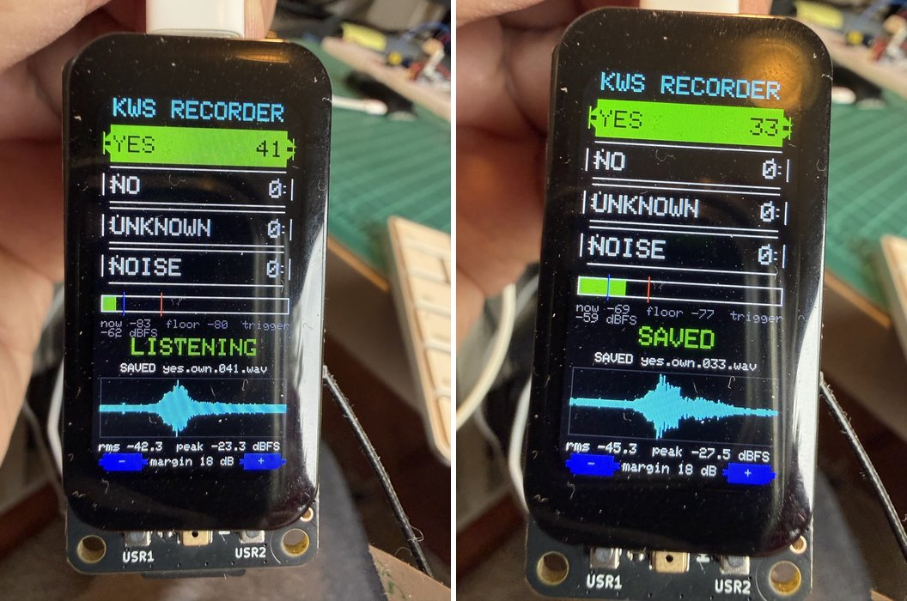
What a first session produced. One session with a single speaker gave 166 clips: 50 YES, 50 NO, 50 UNKNOWN, and 16 NOISE (the recorder stopped saving after the 16th NOISE clip, see the next section). The files are 16 kHz, 16-bit, mono, exactly 1.00 s, and not empty. We reviewed them with tools/kws_clip_review.py.
| Class | Clips | RMS median (dBFS) | RMS 10th to 90th percentile | Peak median / 90th percentile |
|---|---|---|---|---|
| yes | 50 | -39.2 | -44.2 to -29.9 | -22.6 / -5.7 |
| no | 50 | -41.1 | -46.3 to -35.0 | -25.6 / -19.2 |
| unknown | 50 | -39.1 | -42.0 to -28.6 | -22.2 / -7.2 |
| noise | 16 | -64.9 | -70.9 to -31.5 | -42.1 / -20.2 |
- The words are centered as designed. The word starts at about 300 ms in the clip (median 300 for YES and NO, 320 for UNKNOWN).
- This microphone is quieter than the dataset. The medians for the three word classes are -39 to -41 dBFS, against -24 to -25 dBFS for the dataset’s clips. That is 14 to 17 dB lower, with the same measurement on both sides (the RMS of a whole 1-second clip). These recordings were made at one distance and one speaking volume, so the gap is one speaker’s, not a property of the microphone. It does not matter for this model (test 05).
- No gain is needed. We had worried that raising the level by 14 dB would clip the louder clips (the 90th percentile of the peaks is already -5.7 dBFS for YES). Test 05 shows the model is insensitive to the level, so the question does not arise.
- Ten clips look suspicious out of 150 word clips:
yes.own.003,022,038,039,047;no.own.026;unknown.own.001,022,036,046. The reasons are a word that may be cut off, two separate bursts, or a very quiet clip (yes.own.022is at -62 dBFS). The review looks only at the signal. It cannot tell whether the word you said is the word in the label, so listen to these before you upload them. - The noise class was quiet and short. The first 16 clips had a median of -65 dBFS, against -27 for the dataset’s noise clips. A second session added 50 clips (see below).
How it works
- A 2-second ring buffer is filled by a capture task, as in test 02.
- Frames of 20 ms are analysed one by one. The background level is tracked slowly, only while it is quiet.
- A word starts when two frames in a row are more than the margin above the background. The clip is cut 300 ms before that point and 700 ms after it.
- After a clip is saved, the board waits for half a second of quiet before it listens again, so one word makes one clip.
- Every clip is verified: the file is written, read back, and compared with the audio in memory.
- The save, delete, and card code is the same as in the logger, including the shared SPI bus.
The complete sketch (453 lines) is in the repository: part2_tinyml/03_kws_recorder/03_kws_recorder.ino.
A second session of noise. After the fix, the recorder saved 50 more NOISE clips into /noise/ in one go. They are byte for byte identical to what was on the card, all 16 kHz, 16-bit, mono, exactly 1.00 s, none clipped, and the review flagged none. Their median level is -55.7 dBFS (10th to 90th percentile: -64.3 to -42.1), still about 28 dB below the dataset’s noise clips, with a few louder events in the room. Together with the first 16 that makes 66 noise clips.
Preparing the upload
tools/kws_prepare_upload.py gathers the sessions into one folder, never moving the originals. The recorder numbers its clips from 001 in every session, so when two sessions use the same name, the later one gets its folder name in the file name (noise.own2.001.wav); the part before the first dot is still the label, which is how the Studio infers it. It sets aside the clips you want to listen to first and splits the rest at random, about two thirds for training and one third for testing:
| Class | Train | Test | Review first | Total |
|---|---|---|---|---|
| yes | 30 | 15 | 5 | 50 |
| no | 33 | 16 | 1 | 50 |
| unknown | 31 | 15 | 4 | 50 |
| noise | 44 | 22 | 0 | 66 |
The ten clips in Review first are the ones the review flagged. They are kept out of the test set so that doubtful clips do not distort the measurement. The split is random with a fixed seed, so it is repeatable, but it is not stratified by anything else, and with 15 or 16 test clips per word a single mistake moves the accuracy by about 6 points. Treat the result as a rough indication.
A limit we hit: the root folder of a small FAT16 card
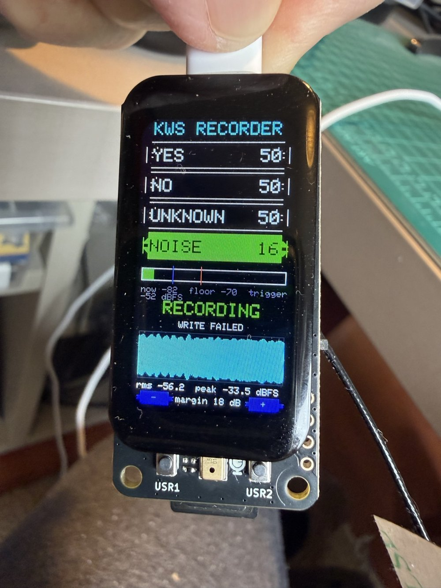
Symptom. After 166 clips the recorder showed WRITE FAILED and saved nothing more. That is why there are only 16 NOISE clips.
Cause. It was not a full card: the 947 MB card was 99% free. A FAT16 volume has a fixed-size root folder, typically 512 entries, and a file with a long name uses several of them. Names like unknown.own.001.wav use three entries each, so 166 files take 498 entries, and with the three items already on the card and the volume label, the count reaches 508. macOS adds a few more hidden items (such as .fseventsd and .Trashes) when it mounts the card, which brings it to 512.
How we checked. With the card mounted on the Mac, creating even one new file with a long name failed with no space left on device, while the volume reported 936 MiB free. The board gave the same answer when it tried to create the class folders on that card. We did not read the root-folder size from the volume itself, so “512 entries” is the usual value for FAT16, not something we measured on this card.
Fix. The recorder and the logger now keep each class in its own folder. Subfolders do not have the root’s limit. Creating the folders needs a few free entries in the root, so on a card whose root is already full, the sketches say so on the screen (CARD FULL) and on the serial port, instead of failing quietly. To recover such a card, copy the clips to a computer, delete them from the card, and reset the board.
Tested after the fix. We cleared the card (the 166 clips were first checked byte for byte against the copies on the Mac) and reset the board. It created the class folders on its own. The logger saved a 500-row file into /idle/ with no lost samples, and the recorder saved six NOISE clips into /noise/, each read back and verified; we removed those test files afterwards. We have not run a full recording session with the fixed sketches yet.
The model
The model was trained in the Edge Impulse Studio by the author (project XIAO IPS Display - KWS, a public project) from the dataset plus the recordings from test 03. The library it generated is not in this repository. What it contains, read from its files:
- the input is 16,000 samples (1 second at 16 kHz); 13 MFCC coefficients over 50 frames, 650 values, go into the network;
- four classes, in this order:
no,noise,unknown,yes(alphabetical, soyesis index 3); - the network is compiled with Edge Impulse’s EON compiler and quantized to int8; the working memory it asks for is 6,265 bytes, and the model code is 56 KB, so it needs no PSRAM (the book asks for it, for the Sense board’s sketch);
- it detects no anomalies.
The Studio’s public page, for the int8 model that runs on the board, shows 91.3% on the validation set and 87.16% on the test set. Its on-device performance panels estimate 361 ms and 15 KB of RAM for the MFCC block, and 5 ms, 12.6 KB of RAM, and 46.0 KB of flash for the network (EON compiler). We did not reproduce the Studio’s test. The performance panels are estimates, not measurements on this board: in test 04 we measured about 17 ms for the MFCC and about 15 ms for the network per slice, so trust the board’s numbers. The screenshots below are of the public project.
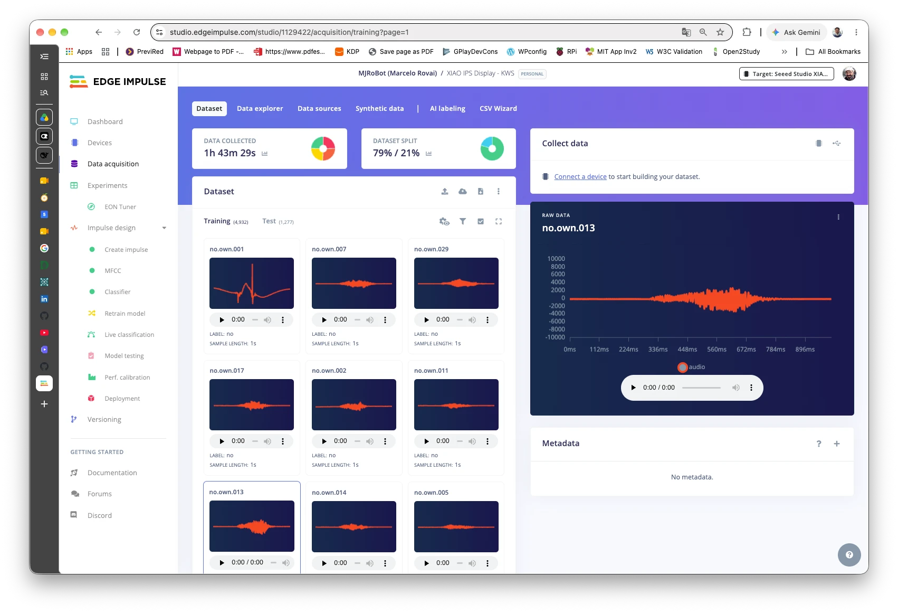
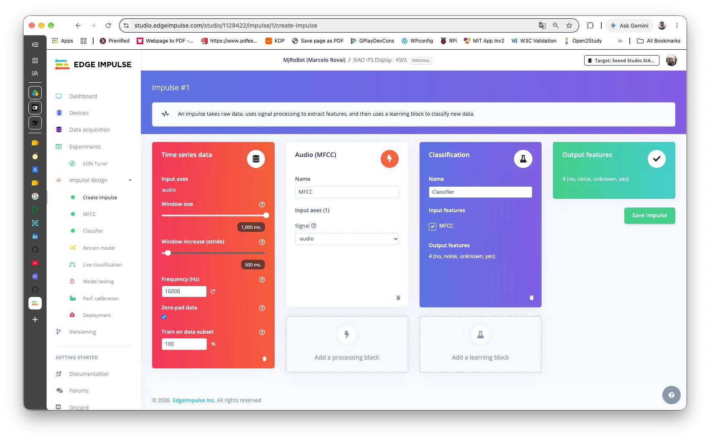
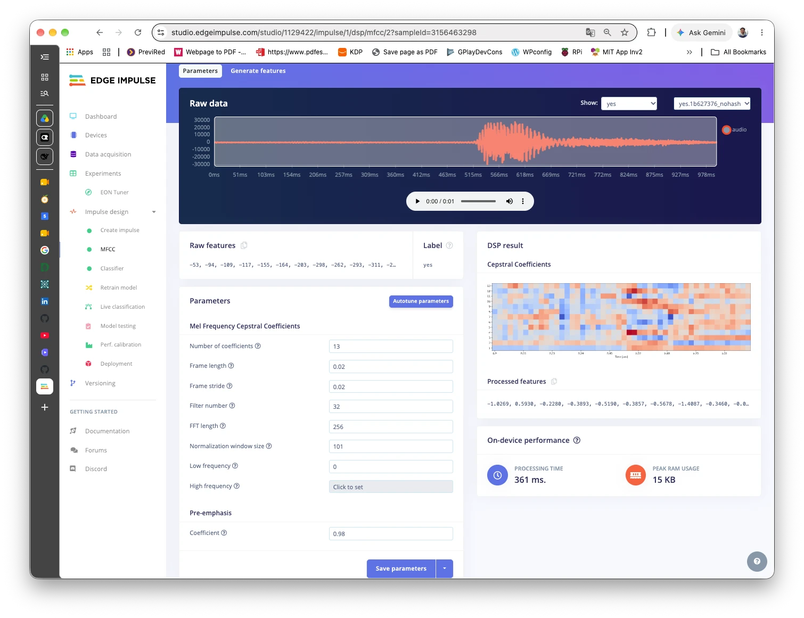
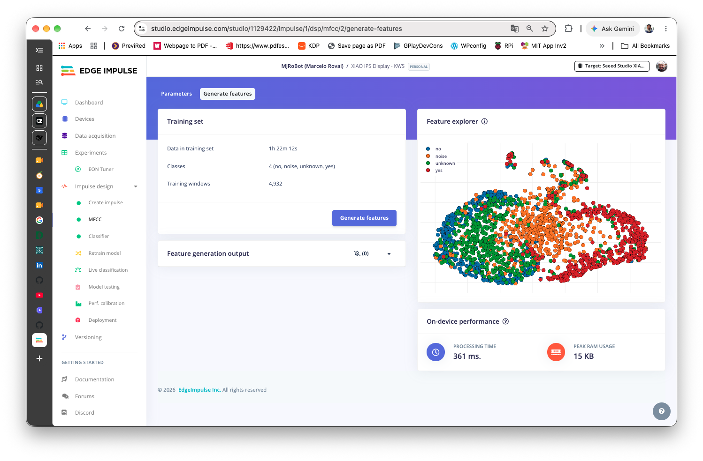
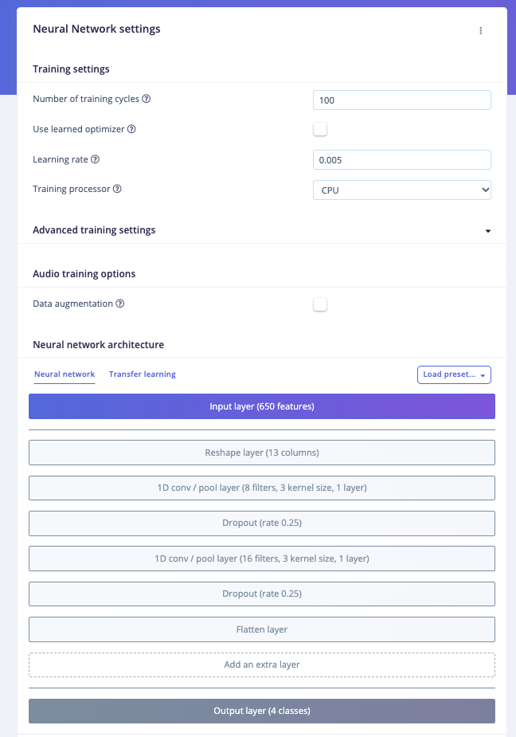
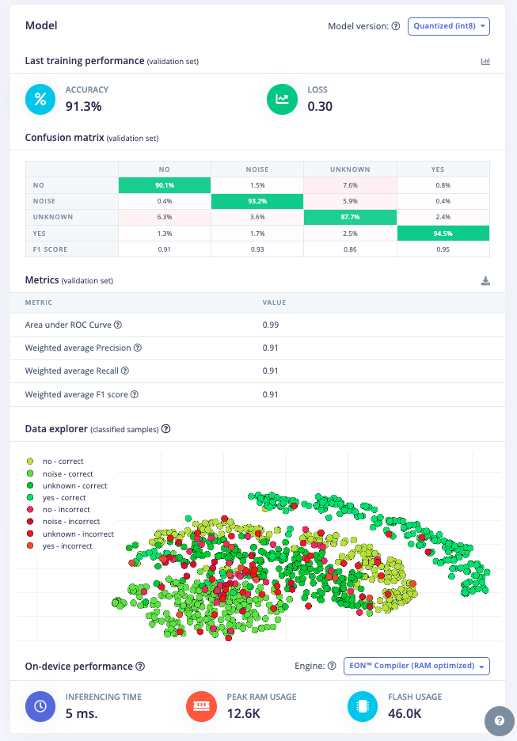
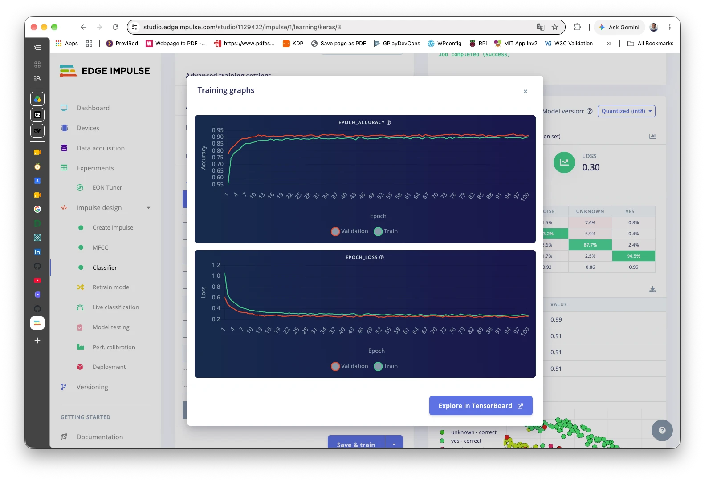
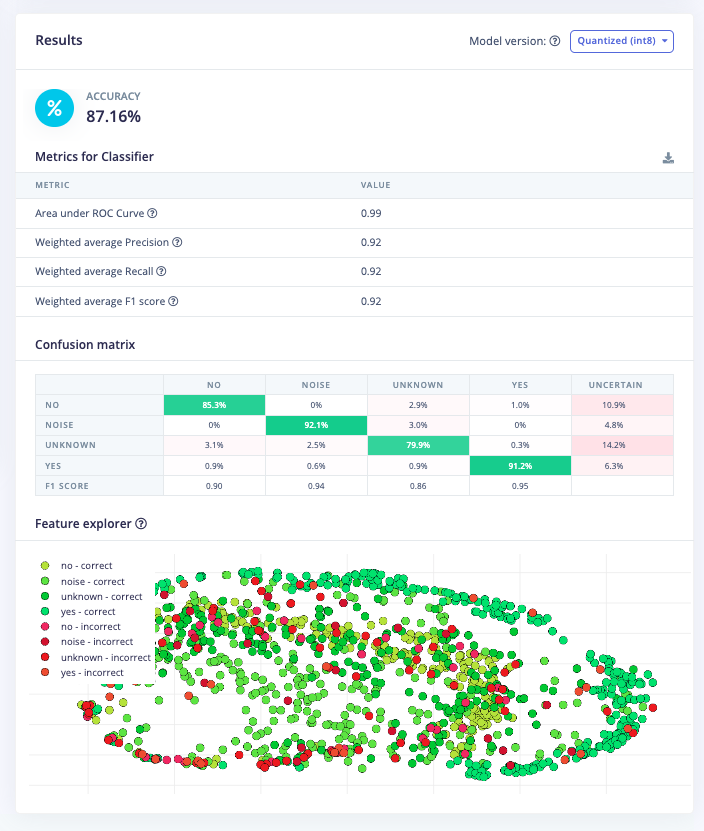
unknown class is the weakestTest 04: keyword spotting on the board
Runs the model on the microphone, continuously: the microphone is cut into 250 ms slices (test 02), and every slice runs the classifier on the last second of audio. The screen shows the detected word in large letters (YES in green, NO in red), a bar for each of the four classes, the processing times, and the level. A word is shown when YES or NO wins with a score of at least 0.80 (a first guess, not a tuned value), and stays on screen for one second.
Build it with ESP-NN turned off. The file build_opt.h next to the sketch does that. It contains one line:
-DEI_CLASSIFIER_TFLITE_ENABLE_ESP_NN=0Both the Arduino IDE and arduino-cli read it. Without it, the model gives wrong answers on this board (next section).
Measured. The sketch uses 597 KB of flash (28%) and 45 KB of RAM (13%), with PSRAM disabled. For each slice, the signal processing takes about 16 to 17 ms and the network about 15 ms, so roughly 32 ms of the 250 ms available. In a quiet room the class noise wins nearly everywhere, but with less certainty than before the fix (scores of 0.46 to 0.89), and unknown sometimes reaches 0.4 to 0.5. Live behavior with a voice is in “The live test with a voice” and “The live test with ground truth” below.
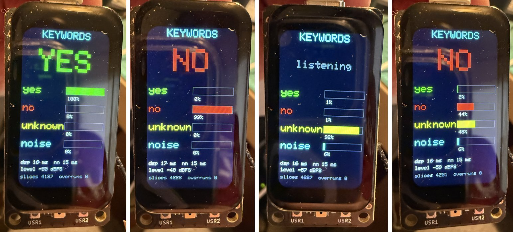
unknown at 92%; and NO still on screen while the bars read no 44%, unknown 48%. The last one is the hold: a detected word stays on the screen for one second (HOLD_MS), while the bars show the current scores.How it works
- The capture is the one from test 02: two slice buffers filled by a task on core 0.
numpy::int16_to_floathands the slice to Edge Impulse as floats in the int16 range. The MFCC block then divides by 32768 itself.run_classifier_continuous()keeps the earlier slices, so each call classifies the last second. The first full window needs four slices; until then the screen says “warming up”.- The labels come from the model, so the screen shows whatever the four classes are called, in the model’s own order.
The complete sketch (225 lines) is in the repository: part2_tinyml/04_kws_inference/04_kws_inference.ino.
A problem we found: the ESP-NN kernels give wrong answers
What happened. The first live attempt classified everything as noise. The recording showed rhythmic bursts of speech, yet yes never went above 0.09. We then fed recorded clips to the board over the USB cable (test 05) to take the microphone and the room out of the picture. Even the dataset’s own clips, which the model had been trained on, came out as noise: 13 of 48 correct (27%), with 0 of 12 for yes and 0 of 12 for unknown.
What we ruled out, in this order:
- The clips arriving damaged. The board returns a checksum of what it received; all of them matched.
- The way we feed the classifier. The Edge Impulse source confirms the format: floats in the int16 range, as the sketch does.
- The model. We built the same library, with the same SDK and the same compiled network, as a program for the Mac. On the same 48 clips it got 44 of 48 (91.7%), in line with the Studio’s 87 to 91%.
The cause. On the ESP32-S3 the SDK turns on two optimized paths by default: ESP-DSP (a fast FFT for the signal processing) and ESP-NN (optimized neural-network kernels). We turned them off one at a time, with a compile-time flag, and scored the same 48 clips on the board each time:
| Build | Correct, of 48 |
|---|---|
| Default (ESP-DSP on, ESP-NN on) | 13 (27.1%) |
| ESP-DSP off, ESP-NN on | 13 (27.1%) |
| ESP-NN off, ESP-DSP on | 44 (91.7%) |
| ESP-DSP off, ESP-NN off | 44 (91.7%) |
| The same model on the Mac | 44 (91.7%) |
With ESP-NN off, the board’s confusion matrix matches the Mac’s cell for cell. ESP-DSP is fine, and keeping it makes the signal processing about twice as fast. The cost of turning ESP-NN off is that the network takes about 15 ms per slice instead of 1 to 2 ms. The 1 to 2 ms were fast because they were wrong.
How far this goes. We found it with Arduino core 3.3.12, with this one model, and with the Edge Impulse SDK inside the library we downloaded. We did not try other cores, other SDK versions, or other models, and we do not know if the fault is in the ESP-NN code, in how it is built here, or in how it meets this core. The book tells you to stay on core 2.0.17 and not update it; that is consistent with a problem in newer cores, but we did not test 2.0.17.
Test 05: replay, a hardware-in-the-loop test
Classifies audio that a computer sends over the USB cable, with the same signal processing and the same network as test 04. It is how the problem above was found, and it is a good way to test any model on this board without depending on the room. It has three commands: WAVE (a whole 1-second clip), and SLCE and RSET (the continuous classifier, one 250 ms slice at a time, as in test 04).
The tools on the computer (standard library only, except the program for the Mac):
tools/kws_replay.pysends whole clips and scores them, optionally made louder or quieter. With--hostit runs the same clips through the program for the Mac.tools/kws_stream_eval.pyplaces each clip between two stretches of noise and runs it in continuous mode, applying test 04’s rule, on the board (--port) or on the Mac.tools/ei_host_test/holds the small program that runs the library on the Mac, andbuild.pybuilds it from the unzipped library.
The complete sketch (144 lines) is in the repository: part2_tinyml/05_kws_replay/05_kws_replay.ino.
What the model does on the board, measured with recorded clips
Whole clips, on your own test clips (68 clips never used in training: 16 no, 22 noise, 15 unknown, 15 yes): 58 correct (85.3%), identical on the board and on the Mac. Recall by class: no 93.8%, yes 93.3%, unknown 80.0%, noise 77.3%.
Continuous mode, as in the live sketch. Each clip sits between two stretches of your room noise, and a clip counts as a detection when YES or NO wins with at least 0.80 in some slice:
| Clips | yes detected |
no detected |
False alarms on noise |
False alarms on unknown |
|---|---|---|---|---|
| Your 68 test clips | 93.3% (14 of 15) | 93.8% (15 of 16) | 0% (0 of 22) | 20% (3 of 15) |
| 400 dataset clips (100 per class) | 84% | 84% | 0% | 10% |
The board and the Mac gave the same table, cell for cell, on all 468 clips. The dataset row is optimistic, because many of its clips were used in training; the first row is the fairer one. With 15 or 16 clips per word, one clip moves a percentage by about 6 points. On the Mac only, with your test clips, the threshold is a trade-off: at 0.6, no is detected 100% of the time but the false alarms on unknown rise to 26.7%; at 0.9, no falls to 75% and those false alarms to 6.7%.
The level does not matter. The scores for a clip were identical, to three decimals, from +12 dB louder to 36 dB quieter. On the board, whole-clip accuracy was the same at +0, +6, and +12 dB. A likely reason, which we have read in the code but not isolated with an experiment: the MFCC block normalizes the coefficients over a sliding window (its win_size is 101), which removes a constant gain, and the network’s outputs are quantized in steps of about 0.004.
The live test with a voice
Three live attempts, in order:
- With ESP-NN on (the default), speech was clearly present, yet
yesnever went above 0.09. This is what led to the problem described above. - With ESP-NN off, but no speech in the recording (the loudest slice was -48 dBFS), so it proves nothing.
- With ESP-NN off and a voice, on the board’s own microphone, over about 100 s. The loudest slice was -29 dBFS, and 67 of the 400 slices were louder than -45 dBFS.
What attempt 3 shows:
- The model detects the words. There were 27 stretches in which the winner was not
noise. In 7 of them onlyyesreached 0.80, in 11 onlyno, in 4 both did, and in 5 neither (the winner wasunknown, or the scores were weak). A clean word gives a score of 1.00 for 3 to 5 slices in a row, which is 0.75 to 1.25 s. - Words that are not YES or NO mostly land in
unknown, with scores of 0.88 to 0.99. - No false alarms in the quiet. Of the 397 one-second windows whose levels are all known, 168 were entirely quiet (every slice below -50 dBFS). In none of them did
yesornoreach 0.80. - The label can flicker inside one word. Several stretches switch between
yes,no, andunknownfor a slice or two, for exampleyes yes yes yes unk unk no yes yes yes. A rule that asks for two slices in a row would hide those flickers; we have not tried it.
The author’s own description of the same test, from watching the screen: YES was almost always right, and some other words gave a false NO. That agrees with the 20% false alarms on unknown clips measured above, which went mostly to no.
What it does not show: an accuracy per word. The exact order and number of the words spoken, with their times, were not recorded, so we cannot say how many yes were missed or how many no were taken for yes. For that number, the test needs ground truth, for example a cue (a beep) before every word, logged on the computer, so that each detection can be matched to what was asked. The measurements on recorded clips above remain the reliable numbers.
The live test with ground truth
tools/kws_cued_test.py gives the live test a known answer. It plays a sound file of beeps on the computer’s speakers; the pattern says which word to say, right after it: one low beep for YES, two middle beeps for NO, three high beeps for any other word. The 30 cues (10 of each kind, in a random order, 5 seconds apart) are known exactly, and the tool logs what the board answers, with the time of every answer. Then it matches each detection to the word that was asked, and counts hits, misses, wrong words, and false alarms, with 95% confidence intervals. With only 10 cues per word, those intervals are wide: 9 of 10 correct is compatible with anything from about 60% to 98%.
Two things it tells apart: detections that fall during the beeps (the cue itself fooling the model, since the microphone hears the beeps) and detections in the quiet gaps. It also reports a looser reading, in which, when both words flashed during one cue, the one with the highest score counts as the answer. We checked the analysis on made-up runs with a known number of planted errors, and it counted them correctly.
Results of one run (Arduino core 3.3.12, ESP-NN off, the board’s own microphone, one speaker, one room, 30 cues in about 2 minutes 40 seconds). The speaker reported afterwards that on cue 1, which asked for NO, they said YES by mistake. We used that report to correct the ground truth (--said 1=yes), so the run counts 11 YES, 9 NO, and 10 other words. The rule is the sketch’s: YES or NO winning with at least 0.80.
| Asked for | Shown correctly | 95% interval | What went wrong |
|---|---|---|---|
| YES (11) | 7 (64%) | 35 to 85% | 3 shown nothing, 1 showed both words |
| NO (9) | 9 (100%) | 70 to 100% | nothing |
| Other word (10) | 8 (80%) | 49 to 94% | 2 were shown as NO |
- If, when both words flashed, the highest score counts, YES goes to 8 of 11 (73%).
- The beeps did not fool the model: no detection fell during the beeps, and none fell in the quiet gaps between cues.
- The three missed YES. In those windows
yesreached 0.37, 0.45, and 0.79 whileunknownornoisewon (0.89 to 0.96). So the model heard something, but not clearly YES; one came close, just under the 0.80 threshold. We do not know why: we have no recording of the audio, and the word may have been said more quietly, at a different moment, or differently. - The two false NO came from two of the other words (scores 0.98 and 0.83). We do not know which words they were. This agrees with the offline result that
unknownclips trigger a word in about 20% of cases, mostly NO. - The threshold is a trade-off here too. At 0.9, YES rises to 8 of 11 (73%) and other words are shown wrongly only once (9 of 10 correct). At 0.6 or 0.7, other words are shown wrongly 3 times (7 of 10 correct). The time alignment does not matter: forcing the lag anywhere from 0.0 to 0.4 s gave the same table.
How far to trust it. Ten cues per word is few: the intervals above are wide, and YES at 64% is compatible with anything from about 35% to 85%. It is one speaker, one session, one distance. Cue 1 (asked for NO, answered with YES) shows the ground truth can have errors: we corrected the one the speaker noticed, and there may be others they did not. The alignment between the beeps and the board’s answers was moderate (a correlation of 0.58 between loudness and the beeps). Offline, on the author’s own clips, YES was detected 93% of the time (14 of 15); live it was 64% (7 of 11). The intervals overlap, so we cannot say the two differ, but the live number is lower and we have not explained it.
Next steps for keyword spotting
- Understand the missed YES. Live YES was 64% against 93% offline. Make the live sketch save the last second of audio to the card whenever the model hesitates (for example when
yesis between 0.3 and 0.8), then listen to those clips and send them through the replay test. That would show if the words were quiet, cut off, or different from the training clips. A longer cued test, with more cues per word, would also narrow the intervals. - Tune the detection rule. The threshold of 0.80 is a guess. On your test clips it misses about 6% of the words and
unknowntriggers a word 20% of the time. A rule that asks for two slices in a row, or a different threshold for each word, might do better; test it on recorded clips first, with the tools above. - Find out if the ESP-NN problem is the core. Build the same replay sketch on core 2.0.17 (the book’s version), in a separate setup so that your installation is not changed. It would say whether the fault comes from the newer core.
- Wake-word use. A single word is not a wake word; a real one needs a model made for it, trained to reject speech that is not the word.
Part 3: a tiny language model on the board
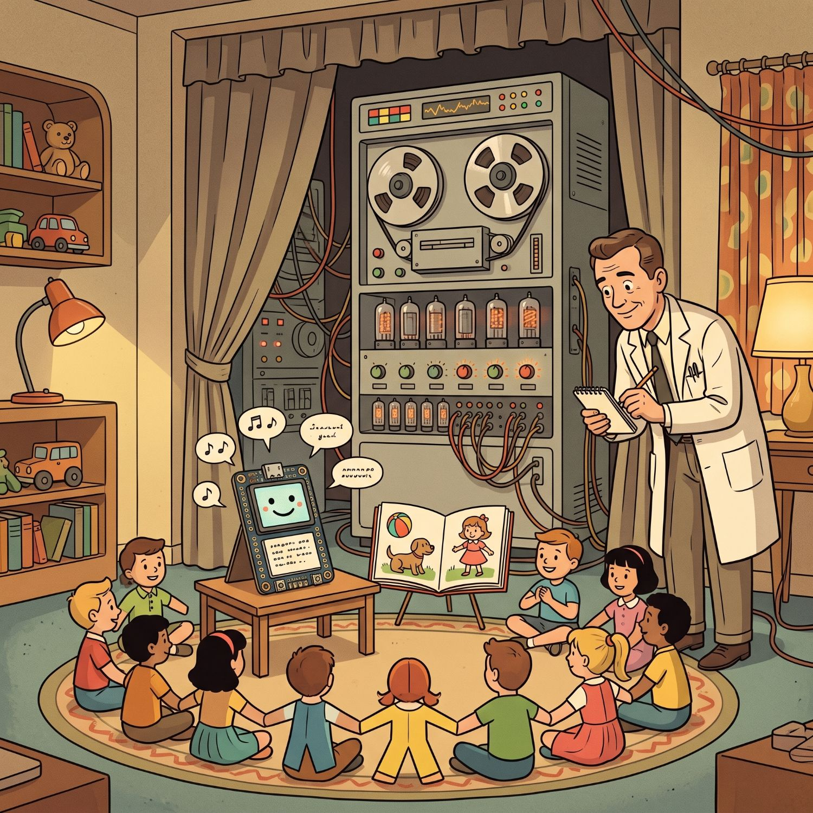
A language model with 260,000 parameters generates short children’s stories on the ESP32-S3, one token at a time, and the text appears on the 1.47” screen as it is written. It is far too small to be useful, and that is the point of the lesson: it shows, in a few hundred lines of C++, everything a large language model does, with a model small enough to read, run, and check by hand.
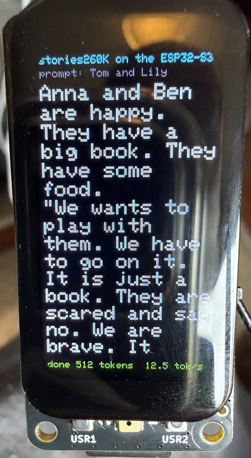
What you need
- The 1.47” touch board, with PSRAM turned on: in the Arduino IDE, Tools, PSRAM, OPI PSRAM (with
arduino-cli, the board string ends in:PSRAM=opi). The default is Disabled, and then the sketch stops with a message, because the weights do not fit in the internal RAM. - A microSD card (FAT) with a folder
slmholding two files, in the root of the card:/slm/stories260K.bin(the weights) and/slm/tok512.bin(the tokenizer).
The two files are Andrej Karpathy’s, from huggingface.co/karpathy/tinyllamas, folder stories260K. They are not in this repository; download them from there. The copies used for the measurements below had these sizes and SHA-256 sums:
| File | Bytes | SHA-256 |
|---|---|---|
stories260K.bin |
1,056,540 | b0a507e7ad0f626624f17112325e66691f9076d622e1d3274d103d00299f2696 |
tok512.bin |
6,227 | 037cb335abb25d1fa9e8ecae30ed2a3a8ace9302862ebcdc05d51a6bbb10c312 |
Credits for Part 3
The model, the tokenizer, and the file format come from Andrej Karpathy’s llama2.c project (MIT license) and its tinyllamas models, trained on the TinyStories data set. The sketch in this repository is a port of llama2.c’s inference code to the Arduino environment, and the Python check in tools/slm_reference.py is a second, independent implementation of the same model. Both were written by Claude Sonnet 5.5 (Anthropic) under the author’s direction, and the author ran, checked, and photographed them on the board.
The model
Read from the header of the file:
Embedding size (dim) |
64 |
| Layers | 5 |
| Attention heads | 8 (4 for the keys and values) |
| Feed-forward size | 172 |
| Vocabulary | 512 tokens |
| Context | 512 tokens |
| Parameters | 264,128, stored as 32-bit floats |
The file is 1,056,540 bytes: 28 bytes of header and 1,056,512 bytes of weights, which is exactly 264,128 values of 4 bytes. The match with the count we computed from the header is how we know the file format was read correctly.
Memory. After loading, 1,824,316 bytes of the PSRAM are in use (6.44 MB of the 8.26 MB that the board reports are still free). The weights are 1.06 MB; the cache of the attention layers (the keys and values of every position, 5 layers by 512 positions) is 655,360 bytes; the rest is the tokenizer and the working buffers. The sketch leaves most of the internal heap free (about 340 KB at the benchmark).
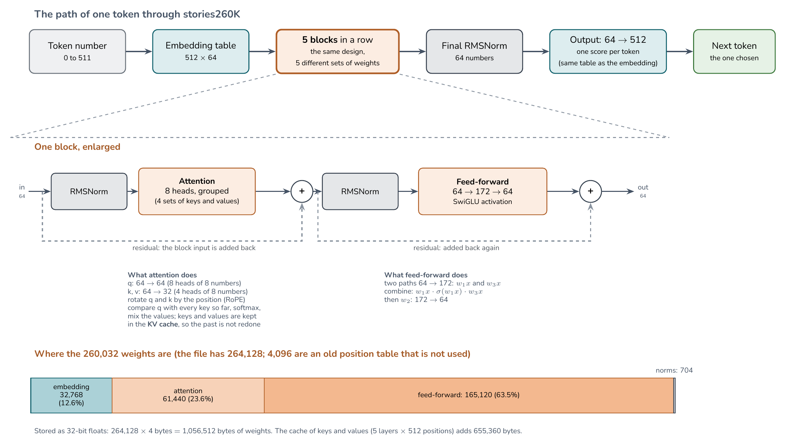
Test 07: tell a story
The sketch loads the weights from the card into PSRAM and generates a story. The first token is the “beginning of text” mark; then each step runs the whole network once to get a score for each of the 512 tokens, picks one, and feeds it back in.
Controls
- USR1 tells a new story, or stops the one being told.
- USR2 changes the beginning of the story (the prompt): none, “Once upon a time”, “One day, a little girl”, “Tom and Lily”, or “The big dog”. The new beginning appears in big letters; press USR1 to continue it.
- Touch: drag up or down to scroll, and tap to switch between big letters (14 per line) and small letters (28 per line). While a story is being written the screen follows the newest text; scroll up to read, and scroll back to the end to follow again.
- Serial (115200): the story as text, then a line with the speed. Two commands:
bruns a benchmark, andg <text>decodes greedily and prints the token numbers (used for the check below).
The words are chosen with a temperature of 0.9 and top-p of 0.9: the model draws among the most likely tokens, so every story is different.
The complete sketch (584 lines) is in the repository: part3_slm/07_slm_stories/07_slm_stories.ino.
How it works
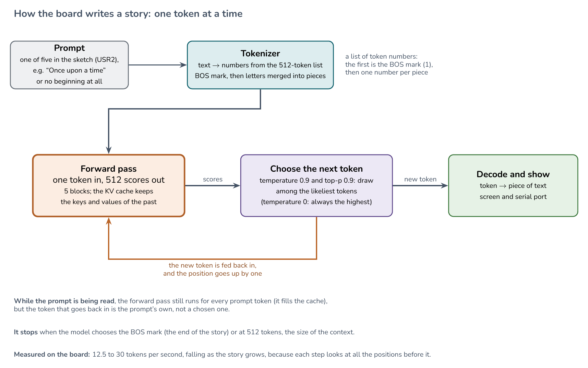
- The tokenizer turns text into numbers. The 512 tokens are letters and common pieces of words (the file
tok512.binhas them with a score each). The text is cut into letters and then the best-scoring pairs are merged until none is left. The reverse is a table lookup. A token such as<0x0A>is a raw byte (here, a new line). - One step of the network (
forward): look up the embedding of the token (64 numbers), then for each of the 5 layers: normalize; compute the query, key, and value; rotate them by an angle that depends on the position (RoPE); store the key and value in the cache; let each of the 8 heads compare its query with all the keys so far and mix the values by those scores (attention); add the result back; then a feed-forward block with the SwiGLU activation, added back too. At the end, the 64 numbers are multiplied by the embedding table to give 512 scores. - The cache is why a step does not recompute the past: the keys and values of earlier positions are kept. It is also why a step takes longer the further the story goes, as the attention has more positions to look at.
- Choosing the token: with a temperature of 0 it is always the highest score; with a higher temperature it is drawn from the softmax of the scores, cutting off the unlikely tail (top-p).
- Everything is plain float code, no libraries and no optimization of the inner loops, to be readable.
Is it right? A check against a second implementation
A port can run and still be wrong, and a 260K-parameter model would write odd stories either way. So the check does not look at the text. tools/slm_reference.py runs the same model in Python (numpy), written separately, with greedy decoding (always the highest score). The command g on the board does the same.
For each of the five beginnings of the sketch (none, “Once upon a time”, “One day, a little girl”, “Tom and Lily”, and “The big dog”), the first 64 tokens were the same on the board and in numpy, 64 of 64 in every case. This checks the whole path (file format, tokenizer, attention, the cache, and the feed-forward block) for those five prompts. It does not check the sampling (temperature and top-p), since greedy decoding does not use it, and it does not look past 64 tokens.
Greedy decoding also shows a known weakness of small models: with “The big dog” it falls into a loop and repeats “He liked to play with his ball.” This is why the sketch draws the words at random instead.
python3 tools/slm_reference.py ~/datasets/slm/stories260K.bin ~/datasets/slm/tok512.bin "" --steps 64Speed
All numbers are the time spent in the network only, not drawing on the screen.
| What | Tokens per second |
|---|---|
| Greedy, the first 64 tokens | 30.5 |
Benchmark (b): 200 tokens, fixed seed |
21.7 |
| A full story of 512 tokens | 12.5 to 12.6 |
The speed falls as the story grows, because each step attends to all the positions before it. The first token needs only one position; the 512th needs 512. We did not try to make it faster: the weights are read from PSRAM, which is slower than the internal RAM; the code does not use the second core; and the weights are 32-bit floats, where 8-bit weights would be four times smaller. These are the places to look.
What the stories are like
A model this small writes grammatical sentences in the style of a children’s story and loses the thread within a paragraph. This is a story the board wrote from the empty prompt (the model’s own words, with an ordinary run of the sketch):
Once upon a time, there was a little girl named Lily. She loved to jump, but it was her favorite ice cream. One day, Lily was very impressive and decided to clean up her room. She asked her mommy, “Why are you sad?”
The first sentence is a typical opening for this kind of story. After that the sentences are fine one by one, but they do not follow from each other (“it was her favorite ice cream”; “very impressive”). Larger models with the same design do much better; this one shows the machinery and its limits. The training data set is TinyStories, made of very simple stories, which is why such a small model can write anything readable at all.
Next steps
- Make it faster. Try the second core, keep the hot buffers in internal RAM, or quantize the weights to 8 bits. Check every change against
tools/slm_reference.py. - Compare the other model sizes of the same family (a model of 15 million parameters would need about 60 MB as 32-bit floats, which does not fit in the 8 MB of PSRAM).
- Let the user type the beginning, with a serial command, instead of the five fixed prompts.
What comes next
- Part 1, other boards: repeat the tests on the 1.14” and 0.96” versions. Their panels are ST7789, they have no touch or microSD, and the 1.14” adds a Grove connector and a third button.
- Battery: the battery test needs a connected LiPo (test 06).
- Part 2: a blind test of the motion model, and finding out why live YES is lower than offline (see the next steps in that page).
- Part 3: make the model faster (the second core, internal RAM, 8-bit weights).
Credits
The sketches, the library patch, and this text were generated by Claude (Sonnet 5.5, Anthropic) under the direction of Marcelo Rovai, who ran each test on the hardware, photographed the screens, and decided what to investigate. The measurements come from that board, through arduino-cli on a Mac. Parts 2 and 3 have their own credits: the Edge Impulse models were trained by Marcelo Rovai, and Part 3 uses Andrej Karpathy’s llama2.c and tinyllamas (see Part 3).
The cover illustration is not a photograph. It was generated locally on a Mac with Qwen-Image-2.1 (Qwen team, Alibaba), using Qwen Image Studio, a macOS app that Marcelo Rovai built with Claude Opus 5 (Anthropic). The text printed on the boards in the illustration is garbled and does not match the real boards.